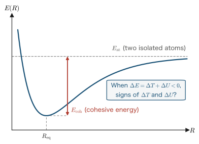
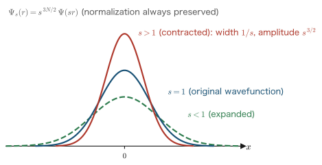
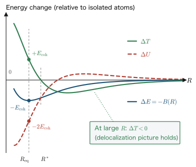

Chapter 2The Virial Theorem and Chemical Bonding
In the previous chapter we surveyed the Schrödinger equation for many-electron systems and the framework of first-principles calculations for solving it for real materials. In this chapter we take up one of the exact consequences of that equation, the virial theorem, as our main subject. The virial theorem is a universal theorem that constrains the relation between the kinetic energy and the potential energy of a system using only the forces acting on the atoms, and it holds without any knowledge of the details of the wave function. With this theorem we can give a general answer, independent of the system, to the simple but deep question: “When a chemical bond forms, how do the kinetic energy and the potential energy of the electrons each change?” In the second half of the chapter we verify this general rule against the numerical results of DFT calculations for the hydrogen molecule, and we also consider the spin polarization that appears in the limit where the molecule dissociates—a seed of magnetism. The viewpoint acquired here, “reading a bond through energy decomposition,” becomes a basic tool when we discuss the cohesion and magnetism of metals from Chapter 3 onward.
- Derive the virial theorem $2T+U=\sum_n \bm{R}_n\cdot\bm{F}_n$ by Löwdin's coordinate-scaling method, including the one-step change of variables
- Derive the relation $E=-T=U/2$ that holds in a zero-force state (an equilibrium structure or an isolated atom)
- Prove the general rule of cohesion, “if atoms bond, the kinetic energy always increases and the potential energy always decreases,” and verify it numerically with a DFT calculation for the hydrogen molecule
- Understand, with a two-level model, the mechanism by which a spin-polarized state is stabilized in the dissociation limit
- Derive the virial theorem $2T+U=3pV$ for bulk systems using Gauss's theorem
2.1 Understanding Chemical Bonding through Energy Decomposition
When two hydrogen atoms are brought close together, a hydrogen molecule H2 forms, and the total energy of the system becomes lower by about 4.75 eV than that of two isolated atoms (this is the experimental value of the electronic binding energy, excluding zero-point vibration). The explanation “they bond because the energy decreases” is correct, but by itself it does not mean that we have understood the mechanism of the bond. The total energy $E$ is the sum of the kinetic energy $T$ and the potential energy $U$
\begin{equation} E = T + U \label{eq:2-etu} \end{equation}so, logically, there are the following three possibilities for the breakdown of the change $\Delta E = \Delta T + \Delta U \lt 0$ that accompanies bond formation.
| Scenario | Kinetic energy $\Delta T$ | Potential energy $\Delta U$ |
|---|---|---|
| (a) | Increase (destabilizing) | Decrease (stabilizing) |
| (b) | Decrease (stabilizing) | Increase (destabilizing) |
| (c) | Decrease (stabilizing) | Decrease (stabilizing) |
An explanation often seen in elementary textbooks is: “The kinetic energy decreases because the electrons spread out (delocalize) between the two nuclei, and this is the origin of the bond.” By analogy with a particle in a box, where doubling the width of the box reduces the kinetic energy to $1/4$, this sounds plausible. If this explanation were correct, the scenario would have to be (b) or (c).
However, according to the virial theorem proved in this chapter, for a molecule or solid in an equilibrium structure, the answer is always (a). That is, when a bond forms, the kinetic energy always increases relative to that of the isolated atoms, and the potential energy always decreases by twice the binding energy. Where does the intuition of delocalization break down, and how are the two reconciled?—this is the question that runs through the whole chapter.

2.1.1 Notation and units
In this chapter, too, we use the Hartree atomic units introduced in Chapter 1 ($\hbar=m_e=e=4\pi\varepsilon_0=1$). The unit of energy is the hartree (symbol Ha), with $1\ \mathrm{Ha} = 27.2114\ \mathrm{eV}$, and the unit of length is the Bohr radius $a_0 = 0.529177\ \text{Å}$. When comparing with experiments or computational examples, we follow convention and give energies in eV and distances in Å alongside.
The system under consideration consists of $N$ electrons (coordinates $\rr_1,\dots,\rr_N$) and $M$ nuclei (charges $Z_n$, coordinates $\bm{R}_1,\dots,\bm{R}_M$). Under the Born–Oppenheimer (adiabatic) approximation described in Chapter 1, we fix the nuclear coordinates $\{\bm{R}_n\}$ as parameters and write the Hamiltonian of the electron system split into a kinetic-energy part and a potential part:
\begin{equation} \hat{H} = \hat{T} + \hat{U}, \qquad \hat{T} = -\frac{1}{2}\sum_{i=1}^{N}\nabla_i^2 , \label{eq:2-hsplit} \end{equation} \begin{equation} \hat{U} = \sum_{i \lt j}\frac{1}{\abs{\rr_i-\rr_j}} \;-\; \sum_{i=1}^{N}\sum_{n=1}^{M}\frac{Z_n}{\abs{\rr_i-\bm{R}_n}} \;+\; \sum_{n \lt n'}\frac{Z_n Z_{n'}}{\abs{\bm{R}_n-\bm{R}_{n'}}}. \label{eq:2-udef} \end{equation}$\hat{U}$ is the sum of three kinds of Coulomb terms: the electron–electron repulsion, the electron–nucleus attraction, and the internuclear repulsion. The internuclear repulsion is a constant that does not act on the electronic wave function, but it contributes to the total energy, so we include it in $\hat U$ (this keeps the later discussion simple). We write the expectation values in the normalized ground state $\Psi$ as
\begin{equation} E = \braket{\Psi|\hat{H}|\Psi} = T + U, \qquad T = \braket{\Psi|\hat{T}|\Psi},\quad U = \braket{\Psi|\hat{U}|\Psi} \label{eq:2-expect} \end{equation}. Each of $E$, $T$, and $U$ is a function of the nuclear configuration $\{\bm{R}_n\}$ (a quantity on the adiabatic potential surface).
Physical Meaning
All three terms of the potential $\hat U$ are Coulomb interactions proportional to the $-1$st power of the distance. This common power “$-1$” determines the coefficients of the virial theorem (twice the kinetic energy and once the potential) in the scaling analysis of the next section. If the interaction were instead a power-law potential of the $n$th power of the distance, the same argument would give a relation of the form $2T = n\braket{V}$ (Exercise 2.2 at the end of the chapter).
2.2 Coordinate Scaling and the Derivation of the Virial Theorem
This section is the theoretical high point of the chapter. Before we begin, here is a road map of what we are going to do.
- We define a transformation (coordinate scaling) that uniformly “stretches or shrinks” all the electron and nuclear coordinates by a factor of $s$. We then prove, writing out the Jacobian of the change of variables explicitly, that the wave function deformed accordingly remains normalized.
- For the scaled wave function, we prove, one line at a time through a change of integration variables, that the expectation value of the kinetic energy scales by a factor of $s^2$ and that of the Coulomb potential by a factor of $s^1$. As a result, the trial value of the total energy takes the simple form $E(s)=s^2T(s)+s\,U(s)$.
- Since $s=1$ returns to the true ground state before scaling, the variational principle tells us that $E(s)$ is stationary at $s=1$. Expanding this stationarity condition carefully with the chain rule and introducing the force on an atom, $\bm{F}_n=-\partial E/\partial\bm{R}_n$, we obtain the virial theorem $2T+U=\sum_n\bm{R}_n\cdot\bm{F}_n$.
This derivation is due to Löwdin (1959), and it is general: it holds for molecules and solids alike. First we prepare two mathematical tools that we will need.
Math Note: Change of variables in multiple integrals and the Jacobian
In the substitution rule for a single variable, if we put $x=g(\bar{x})$, then $\dd x = g'(\bar{x})\,\dd\bar{x}$, and the “stretching or shrinking” ratio $g'$ of the infinitesimal interval multiplies the integration measure. For several variables this stretching ratio becomes a matrix. For a smooth one-to-one transformation from a set of $n$ variables $\bm{x}=(x_1,\dots,x_n)$ to $\bar{\bm{x}}=(\bar{x}_1,\dots,\bar{x}_n)$, define the Jacobi matrix by $J_{ij} = \partial \bar{x}_i/\partial x_j$. Then the volume element transforms as $$\dd^n\bar{x} = \abs{\det J}\,\dd^n x$$ Here $\det J$ is the quantity that tells us “by what factor an infinitesimal volume is multiplied by the transformation.”
What we use in this chapter is the simplest case, namely uniform scaling of all the coordinates, $\bar{x}_i = s\,x_i$ ($s\gt 0$, $i=1,\dots,n$). In this case the Jacobi matrix is $J = s\,\bm{1}_n$ ($s$ times the identity matrix), so the determinant, being the product of the diagonal entries, is $$\det J = s^n$$ Therefore, if we multiply all $n=3N$ coordinates ($N$ electrons × 3 components) by $s$ at once, we obtain $$\dd\bar{v} \equiv \dd^3\bar{r}_1\cdots\dd^3\bar{r}_N = s^{3N}\,\dd^3 r_1\cdots \dd^3 r_N = s^{3N}\,\dd v, \qquad\text{that is}\qquad \dd v = s^{-3N}\,\dd\bar{v}$$ For a single particle, $\dd^3\bar{r}_i = s^3\,\dd^3 r_i$, and we may also understand the result above as the product of $N$ such factors.
Math Note: The variational principle and the stationarity condition
Let $\{\Psi_k\}$ be an orthonormal set of eigenfunctions of the Hamiltonian $\hat H$, and let the corresponding eigenvalues be $E_0 \le E_1 \le E_2 \le \cdots$ (the lowest eigenvalue $E_0$ is the ground-state energy). Any normalized state $\Phi$ can be expanded in the complete set: $$\Phi = \sum_k c_k \Psi_k, \qquad \braket{\Phi|\Phi} = \sum_{k,k'} c_k^* c_{k'} \braket{\Psi_k|\Psi_{k'}} = \sum_k \abs{c_k}^2 = 1 .$$ In the second equality we used the orthonormality of the eigenfunctions, $\braket{\Psi_k|\Psi_{k'}}=\delta_{kk'}$. Computing the expectation value of the energy in this $\Phi$, we get $$\braket{\Phi|\hat H|\Phi} = \sum_{k,k'} c_k^* c_{k'} E_{k'} \braket{\Psi_k|\Psi_{k'}} = \sum_k \abs{c_k}^2 E_k \;\ge\; \sum_k \abs{c_k}^2 E_0 = E_0 .$$ In the inequality we used the coefficient $\abs{c_k}^2 \ge 0$ of each term and $E_k \ge E_0$. In other words, no matter what trial function we use, the expectation value of the energy never falls below the true ground-state energy (the Rayleigh–Ritz variational principle).
From this follows the stationarity condition that we use in this chapter. Suppose there is a family $\Phi_s$ of normalized trial functions that are continuously deformed by a parameter $s$, and that at a certain value (here $s=1$) it coincides exactly with the true ground state. Then $E(s)\equiv\braket{\Phi_s|\hat H|\Phi_s}$ satisfies $E(s)\ge E_0$ for all $s$ and $E(1)=E_0$. That is, $s=1$ is a minimum point of the function $E(s)$, and if $E(s)$ is differentiable, then, as a basic fact of single-variable calculus, $$\left.\frac{\dd E}{\dd s}\right|_{s=1} = 0$$ holds. If the value of the derivative were positive or negative, there would be values lower than $E_0$ in the neighborhood of $s=1$, which contradicts the variational principle.
2.2.1 The scaling transformation and conservation of normalization
We now define a scaling transformation that stretches or shrinks the electron coordinates and the nuclear coordinates simultaneously, and show that the accompanying deformation of the wave function preserves the normalization.
Definition: Coordinate scaling and the scaled wave function
For a scale factor $s \gt 0$, define the scaled coordinates by \begin{equation} \bar{\rr}_i = s\,\rr_i \quad (i=1,\dots,N), \qquad \bar{\bm{R}}_n = s\,\bm{R}_n \quad (n=1,\dots,M) \label{eq:2-scaling} \end{equation} Write $\Psi(\bar\rr_1,\dots,\bar\rr_N;\{s\bm{R}\})$ for the normalized exact ground state of the Hamiltonian for the nuclear configuration $\{\bar{\bm R}_n\}=\{s\bm{R}_n\}$. Then define the scaled wave function by \begin{equation} \Psi_s(\rr_1,\dots,\rr_N) = s^{3N/2}\,\Psi(s\rr_1,\dots,s\rr_N;\{s\bm{R}\}) \label{eq:2-psis} \end{equation}
Let us check in words the structure of Definition \eqref{eq:2-psis}. $\Psi_s$ works in two stages: we prepare “the true ground state for the configuration $\{s\bm{R}\}$ in which the nuclei are stretched or shrunk by a factor of $s$,” reread its electron coordinates with a factor of $s$ ($\rr_i \mapsto s\rr_i$), and use the result as a trial function for the system with the original nuclear configuration $\{\bm{R}\}$. At $s=1$ both operations are the identity transformation, so $\Psi_{s=1}$ is exactly the true ground state for the nuclear configuration $\{\bm{R}\}$. For $s\ne 1$, $\Psi_s$ is not a true eigenstate, but, as we will see later, it is a normalized and antisymmetric function, so it qualifies as a trial function for the variational principle. Scaling the nuclear coordinates together with the electron coordinates is the device that finally makes the “force on an atom” appear in the theorem.
The leading factor $s^{3N/2}$ is attached in order to preserve the normalization. Let us actually check this. The normalization integral is
\begin{align} \int \abs{\Psi_s(\rr_1,\dots,\rr_N)}^2 \,\dd v &= s^{3N}\int \abs{\Psi(s\rr_1,\dots,s\rr_N;\{s\bm{R}\})}^2 \,\dd v . \label{eq:2-norm1} \end{align}Here we have merely substituted Definition \eqref{eq:2-psis} and taken $\abs{s^{3N/2}}^2 = s^{3N}$ outside the integral. Next we change the integration variables to $\bar{\rr}_i = s\rr_i$. As shown in the Math Note above, the Jacobian of uniform scaling in $3N$ dimensions is $s^{3N}$, so $\dd v = s^{-3N}\dd\bar{v}$. The range of integration goes from all of space to all of space, so it does not change. Therefore
\begin{align} \int \abs{\Psi_s}^2 \,\dd v &= s^{3N}\, s^{-3N} \int \abs{\Psi(\bar\rr_1,\dots,\bar\rr_N;\{s\bm{R}\})}^2 \,\dd\bar{v} \notag\\ &= \int \abs{\Psi(\bar\rr_1,\dots,\bar\rr_N;\{s\bm{R}\})}^2 \,\dd\bar{v} = 1 . \label{eq:2-norm2} \end{align}In the first line the Jacobian factor $s^{-3N}$ exactly cancels the prefactor $s^{3N}$, and in the second line we used the fact that $\Psi$ is the normalized wave function (for the nuclear configuration $\{s\bm{R}\}$). Thanks to the factor $s^{3N/2}$, we have verified that $\Psi_s$ is normalized for any $s$. Moreover, if $\Psi$ is antisymmetric under the exchange of electron coordinates, then $\Psi_s$, in which all the coordinates are reread with the same factor, is clearly antisymmetric as well. Thus $\Psi_s$ is a legitimate trial function.
2.2.2 The kinetic energy scales as $s^2$
We now show that the expectation value of the kinetic energy for the scaled wave function $\Psi_s$ is exactly $s^2$ times its value before scaling. Intuitively, if we “compress” the wave function spatially by a factor of $1/s$, the gradient becomes $s$ times steeper, and the kinetic energy, which is proportional to the square of the gradient, becomes $s^2$ times larger (Figure 2.2).

On to the proof. Substituting Definition \eqref{eq:2-psis} into the expectation value of the kinetic energy, we obtain
\begin{align} \braket{\Psi_s|\hat{T}|\Psi_s} &= s^{3N}\int \dd v\; \Psi^*(s\rr_1,\dots,s\rr_N;\{s\bm{R}\}) \left(-\frac{1}{2}\sum_{i=1}^{N}\nabla_i^2\right) \Psi(s\rr_1,\dots,s\rr_N;\{s\bm{R}\}) . \label{eq:2-kin1} \end{align}Here $\nabla_i^2$ is the derivative with respect to the original coordinates $\rr_i=(x_i,y_i,z_i)$. By the differentiation of a composite function (the chain rule), through $\bar{x}_i = s x_i$,
\begin{align} \frac{\partial}{\partial x_i}\Psi(s\rr_1,\dots) = \frac{\partial \bar{x}_i}{\partial x_i}\,\frac{\partial \Psi}{\partial \bar{x}_i} = s\,\frac{\partial \Psi}{\partial \bar{x}_i} \qquad\Longrightarrow\qquad \frac{\partial^2}{\partial x_i^2}\Psi = s^2\,\frac{\partial^2 \Psi}{\partial \bar{x}_i^2} \label{eq:2-chainrule-x} \end{align}holds (and likewise for the $y,z$ components). Therefore the Laplacian
\begin{equation} \nabla_i^2 = \frac{\partial^2}{\partial x_i^2}+\frac{\partial^2}{\partial y_i^2}+\frac{\partial^2}{\partial z_i^2} = s^2\left( \frac{\partial^2}{\partial \bar{x}_i^2}+\frac{\partial^2}{\partial \bar{y}_i^2}+\frac{\partial^2}{\partial \bar{z}_i^2} \right) = s^2\,\bar{\nabla}_i^2 \label{eq:2-laplacian} \end{equation}is replaced by the Laplacian $\bar{\nabla}_i^2$ in the scaled coordinates. Substituting this into Eq. \eqref{eq:2-kin1} and further changing the integration variables to $\bar\rr_i = s\rr_i$ (with $\dd v = s^{-3N}\dd\bar{v}$, the same substitution as for the normalization), we obtain
\begin{align} \braket{\Psi_s|\hat{T}|\Psi_s} &= s^{3N}\,s^2 \int \dd v\; \Psi^*(s\rr_1,\dots;\{s\bm{R}\}) \left(-\frac{1}{2}\sum_{i=1}^{N}\bar{\nabla}_i^2\right) \Psi(s\rr_1,\dots;\{s\bm{R}\}) \notag\\ &= s^{3N}\,s^2\,s^{-3N} \int \dd \bar{v}\; \Psi^*(\bar\rr_1,\dots,\bar\rr_N;\{s\bm{R}\}) \left(-\frac{1}{2}\sum_{i=1}^{N}\bar{\nabla}_i^2\right) \Psi(\bar\rr_1,\dots,\bar\rr_N;\{s\bm{R}\}) \notag\\ &= s^2\;T(s) . \label{eq:2-kinscale} \end{align}In the first line we took the factor $s^2$ produced by the scaling of the Laplacian, Eq. \eqref{eq:2-laplacian}, outside the integral, and in the second line we carried out the change of variables (the Jacobian $s^{-3N}$ again cancels the prefactor $s^{3N}$). The quantity that appeared in the last line,
\begin{equation} T(s) \equiv \int \dd\bar{v}\;\Psi^*(\bar\rr_1,\dots;\{s\bm{R}\})\,\hat{T}_{\bar{r}}\,\Psi(\bar\rr_1,\dots;\{s\bm{R}\}) \label{eq:2-Ts-def} \end{equation}is the expectation value of the kinetic energy in the true ground state of the system with nuclear configuration $\{s\bm{R}\}$. The name of the integration variable is immaterial, so this is nothing other than the “kinetic energy as a function of the nuclear configuration,” which is defined independently of the scaling operation, evaluated at the configuration $\{s\bm{R}\}$. At $s=1$, $T(1)=T$ (the kinetic energy at the original configuration). We have thus shown that
the expectation value of the kinetic energy scales by a factor of $s^2$: $\braket{\Psi_s|\hat{T}|\Psi_s} = s^2\,T(s)$.
2.2.3 The Coulomb potential scales as $s^1$
Next we carry out the same calculation for the potential term. The key point is that the Coulomb potential \eqref{eq:2-udef} is a homogeneous function of degree $-1$ under uniform scaling of all the coordinates; that is, if all the coordinates are multiplied by $1/s$, its value is multiplied by $s$. Let us verify this for each of the three kinds of terms. Substituting $\rr_i = \bar\rr_i/s$ and $\bm{R}_n = \bar{\bm{R}}_n/s$, we have:
\begin{align} \frac{1}{\abs{\rr_i-\rr_j}} &= \frac{1}{\abs{\bar\rr_i/s-\bar\rr_j/s}} = \frac{1}{\frac{1}{s}\abs{\bar\rr_i-\bar\rr_j}} = \frac{s}{\abs{\bar\rr_i-\bar\rr_j}} , \label{eq:2-uee} \\[4pt] \frac{Z_n}{\abs{\rr_i-\bm{R}_n}} &= \frac{Z_n}{\abs{\bar\rr_i/s-\bar{\bm{R}}_n/s}} = \frac{s\,Z_n}{\abs{\bar\rr_i-\bar{\bm{R}}_n}} , \label{eq:2-uen} \\[4pt] \frac{Z_n Z_{n'}}{\abs{\bm{R}_n-\bm{R}_{n'}}} &= \frac{s\,Z_n Z_{n'}}{\abs{\bar{\bm{R}}_n-\bar{\bm{R}}_{n'}}} . \label{eq:2-unn} \end{align}In every line, we merely took the common factor $1/s$ outside the difference of vectors and used the property of the absolute value, $\abs{c\,\bm{a}}=\abs{c}\,\abs{\bm{a}}$. Therefore, for the whole summed $\hat U$,
\begin{equation} \hat{U}\bigl(\{\bar\rr_i/s\},\{\bar{\bm{R}}_n/s\}\bigr) = s\,\hat{U}\bigl(\{\bar\rr_i\},\{\bar{\bm{R}}_n\}\bigr) \label{eq:2-uhomog} \end{equation}holds. This is the homogeneity of the Coulomb interaction.
We use this property to compute the expectation value. Substituting Definition \eqref{eq:2-psis} and changing the integration variables to $\bar\rr_i = s\rr_i$, we obtain
\begin{align} \braket{\Psi_s|\hat{U}|\Psi_s} &= s^{3N}\int \dd v\; \abs{\Psi(s\rr_1,\dots,s\rr_N;\{s\bm{R}\})}^2\; \hat{U}\bigl(\{\rr_i\},\{\bm{R}_n\}\bigr) \notag\\ &= s^{3N}\,s^{-3N}\int \dd \bar{v}\; \abs{\Psi(\bar\rr_1,\dots,\bar\rr_N;\{s\bm{R}\})}^2\; \hat{U}\bigl(\{\bar\rr_i/s\},\{\bar{\bm{R}}_n/s\}\bigr) \notag\\ &= s\int \dd \bar{v}\; \abs{\Psi(\bar\rr_1,\dots,\bar\rr_N;\{s\bm{R}\})}^2\; \hat{U}\bigl(\{\bar\rr_i\},\{\bar{\bm{R}}_n\}\bigr) \notag\\ &= s\;U(s) . \label{eq:2-potscale} \end{align}Let us state what was done in each line. Line 1: since $\hat U$ is a multiplication operator containing no derivatives, the expectation value is the integral of its product with $\abs{\Psi_s}^2$. Line 2: we carried out the change of variables. All the $\rr_i$ in the integrand are rewritten as $\bar\rr_i/s$. We also rewrote the original nuclear configuration as $\bar{\bm{R}}_n/s$ by means of the identity $\bm{R}_n = (s\bm{R}_n)/s = \bar{\bm{R}}_n/s$ (this is merely a rewriting of fixed numbers). Line 3: we took the factor $s$ outside by the homogeneity \eqref{eq:2-uhomog}. Line 4: the remaining integral is the expectation value of the potential in the true ground state for the nuclear configuration $\{s\bm{R}\}$, and we have defined it as $U(s)$ (with $U(1)=U$). We have thus shown that
the expectation value of the potential scales by a factor of $s^1$: $\braket{\Psi_s|\hat{U}|\Psi_s} = s\,U(s)$.
Physical Meaning
The essence of what determines the “size” of a quantum-mechanical system is that the kinetic energy and the potential scale with different powers, $s^2$ and $s^1$. If we shrink the system ($s\gt1$), the energy gained from the Coulomb attraction grows only by a factor of $s$, whereas the energy cost of the kinetic energy grows by a factor of $s^2$. Conversely, if we expand it ($s\lt1$), the kinetic energy decreases, but the gain from the attraction is also lost. A finite size (of the order of the Bohr radius for an atom) is fixed as the compromise between the two. In classical mechanics this compromise does not exist, and the electron falls into the nucleus. The reason atoms do not collapse lies in this asymmetry of the scaling law, which is often called the “pressure of the quantum-mechanical kinetic energy.”
2.2.4 From the stationarity condition to the virial theorem
We can now assemble the trial value of the total energy. Combining the results of the previous subsections, Eqs. \eqref{eq:2-kinscale} and \eqref{eq:2-potscale}, we obtain
\begin{equation} E(s) \equiv \braket{\Psi_s|\hat{H}|\Psi_s} = \braket{\Psi_s|\hat{T}|\Psi_s} + \braket{\Psi_s|\hat{U}|\Psi_s} = s^2\,T(s) + s\,U(s) \label{eq:2-es} \end{equation}Two points deserve emphasis here. First, $E(s)$ is “the expectation value of the Hamiltonian for the nuclear configuration $\{\bm{R}\}$, sandwiched between the trial function $\Psi_s$,” and by the variational principle it is always greater than or equal to the true ground-state energy $E$. Second, the dependence on $s$ enters not only through the explicit factors $s^2$ and $s$ but also through the arguments of $T(s)$ and $U(s)$ (the nuclear configuration $\{s\bm{R}\}$). Treating this “hidden” dependence on $s$ carefully is what produces the force term.
At $s=1$, $\Psi_s$ coincides with the true ground state, so by the Math Note (the variational principle and the stationarity condition),
\begin{equation} \left.\frac{\dd E(s)}{\dd s}\right|_{s=1} = 0 . \label{eq:2-stationary} \end{equation}We now evaluate this stationarity condition. First, differentiating Eq. \eqref{eq:2-es} with the product rule gives
\begin{align} \frac{\dd E(s)}{\dd s} = 2s\,T(s) + s^2\,\frac{\dd T(s)}{\dd s} + U(s) + s\,\frac{\dd U(s)}{\dd s} . \label{eq:2-des1} \end{align}Next we expand $\dd T(s)/\dd s$ with the chain rule. Since $T(s)$ depends on $s$ only through the nuclear configuration $\bar{\bm{R}}_n = s\bm{R}_n$, summing over the nucleus index $n$ and the Cartesian component $p\in\{x,y,z\}$ gives
\begin{align} \frac{\dd T(s)}{\dd s} = \sum_{n=1}^{M}\sum_{p} \frac{\partial T}{\partial \bar{R}_{np}}\, \frac{\partial \bar{R}_{np}}{\partial s} = \sum_{n,p} \frac{\partial T}{\partial \bar{R}_{np}}\, R_{np} . \label{eq:2-chainT} \end{align}In the second equality we differentiated $\bar{R}_{np} = s\,R_{np}$ with respect to $s$ and used $$\frac{\partial \bar{R}_{np}}{\partial s} = \frac{\partial (s R_{np})}{\partial s} = R_{np}$$ (note that $R_{np}$ is a constant that does not depend on $s$). In exactly the same way, for $U(s)$ we have
\begin{equation} \frac{\dd U(s)}{\dd s} = \sum_{n,p}\frac{\partial U}{\partial \bar{R}_{np}}\,R_{np} \label{eq:2-chainU} \end{equation}Substituting these into Eq. \eqref{eq:2-des1}, we obtain
\begin{align} \frac{\dd E(s)}{\dd s} = 2s\,T(s) + U(s) + \sum_{n,p}\left( s^2\,\frac{\partial T}{\partial \bar{R}_{np}} + s\,\frac{\partial U}{\partial \bar{R}_{np}} \right) R_{np} \label{eq:2-des2} \end{align}Now we set $s=1$. Then $\bar{\bm{R}}_n = \bm{R}_n$, $T(1)=T$, and $U(1)=U$, so the stationarity condition \eqref{eq:2-stationary} becomes
\begin{equation} 2T + U + \sum_{n,p} \frac{\partial (T+U)}{\partial R_{np}}\,R_{np} = 0 \label{eq:2-des3} \end{equation}The quantity $T+U$ appearing in the last term is, viewed as a function of the nuclear configuration, precisely the adiabatic potential energy surface $E(\{\bm{R}\})$ (Eq. \eqref{eq:2-expect}: the sum of the expectation values in the true ground state for each configuration). We therefore define the force on atom $n$ by
\begin{equation} \bm{F}_n = -\frac{\partial E}{\partial \bm{R}_n} = -\frac{\partial (T+U)}{\partial \bm{R}_n}, \qquad F_{np} = -\frac{\partial (T+U)}{\partial R_{np}} \label{eq:2-force} \end{equation}(this is the same force as that used in structural optimization and molecular dynamics), and Eq. \eqref{eq:2-des3} can be written as
\begin{equation} 2T + U - \sum_{n,p} F_{np}\,R_{np} = 0 \notag \end{equation}Collecting the sum over components into the vector inner product $\sum_p F_{np}R_{np} = \bm{R}_n\cdot\bm{F}_n$, we arrive at the desired theorem.
The quantity $\sum_n \bm{R}_n\cdot\bm{F}_n$ on the right-hand side is called the virial. Let us summarize what the derivation above has given us. A quantity that probes the internal structure of the wave function, namely twice the kinetic energy plus the potential energy, is determined solely by the “structural information” of the atomic positions and the forces acting on the atoms. Only two ingredients were used in the derivation: (i) the Coulomb interaction goes as the distance to the power $-1$, and (ii) the variational principle. No approximation has entered at all, so this is an exact consequence of the many-electron Schrödinger equation.
Math Note: The virial does not depend on the choice of the coordinate origin
The quantity $\bm{R}_n\cdot\bm{F}_n$ on the right-hand side appears to depend on the position of the origin, since shifting the origin by $\bm{a}$ changes $\bm{R}_n \to \bm{R}_n+\bm{a}$. However, the total energy is invariant under a translation of the whole system; that is, $E(\{\bm{R}_n+\bm{a}\}) = E(\{\bm{R}_n\})$ holds for any $\bm{a}$. Differentiating both sides with respect to $\bm{a}$ and setting $\bm{a}=\bm{0}$, we obtain $$\bm{0} = \frac{\partial}{\partial \bm{a}}E(\{\bm{R}_n+\bm{a}\})\Big|_{\bm{a}=0} = \sum_n \frac{\partial E}{\partial \bm{R}_n} = -\sum_n \bm{F}_n ,$$ that is, the sum of the forces is zero (a manifestation of Newton's third law). Therefore $$\sum_n (\bm{R}_n+\bm{a})\cdot\bm{F}_n = \sum_n \bm{R}_n\cdot\bm{F}_n + \bm{a}\cdot\underbrace{\sum_n \bm{F}_n}_{=\,\bm{0}} = \sum_n \bm{R}_n\cdot\bm{F}_n$$ and the virial does not depend on the choice of the origin. This is consistent with the fact that the left-hand side, $2T+U$, does not depend on the origin.
Physical Meaning
This theorem is the quantum-mechanical, molecule-and-solid version of Clausius's virial theorem of classical mechanics ($2\overline{T} = -\overline{\sum_i \rr_i\cdot\bm{F}_i}$ for the time average of a periodic motion). In the classical version a time average along the particle trajectories was needed, whereas in the quantum version the expectation value in a stationary state plays that role. Moreover, for the exact ground state the force $\bm{F}_n$ is known, by the Hellmann–Feynman theorem, to coincide with “the electrostatic force felt by nucleus $n$” (the Coulomb force exerted by the electric field created by the electron density and the other nuclei) (Feynman, 1939; the proof of the theorem and the practical method of computation are treated in Section 16.2 of Chapter 16). In other words, the right-hand side of the virial theorem is, in principle, a quantity that can be computed from the electron density $\rho(\rr)$ alone.
2.3 The Equilibrium Structure and the Isolated-Atom Limit
The virial theorem of the previous section is a general relation that holds for any nuclear configuration. From here on we focus on special situations in which its right-hand side (the virial) vanishes, that is, situations in which the force on every atom is zero. Two physically important cases satisfy this condition.
- Equilibrium structure: the configuration at which the structural optimization of a molecule or crystal has finished and the adiabatic potential energy surface $E(\{\bm{R}\})$ is at a local minimum (or is stationary). From the very definition of a local minimum, $\bm{F}_n = -\partial E/\partial\bm{R}_n = \bm{0}$ ($n=1,\dots,M$).
- Isolated-atom limit: the state in which the atoms are pulled infinitely far apart. Since the interaction between atoms vanishes, the atoms exert no force on one another, and if each atom is spherically symmetric, the force that the nucleus feels from its own electron cloud is also zero by symmetry. When there is a single atom ($M=1$) with its nucleus placed at the origin, $\bm{R}_1=\bm{0}$, so the virial vanishes trivially even if the force is not zero.
2.3.1 The relation among $E$, $T$, and $U$ when the forces are zero
In either case each term on the right-hand side is individually zero, so the virial theorem degenerates into
\begin{equation} 2T + U = 0 \label{eq:2-zeroforce} \end{equation}a purely energetic relation that contains neither nuclear coordinates nor forces. Combining this with the definition of the total energy, Eq. \eqref{eq:2-etu}, completely determines the three quantities $E$, $T$, and $U$ in terms of one another. Let us actually solve for them.
\begin{align} U &= -2T, \label{eq:2-u-from-t}\\[4pt] E = T + U &= T + (-2T) = -T , \label{eq:2-e-eq-mt}\\[4pt] T = -\frac{U}{2} \quad\Longrightarrow\quad E = T + U &= -\frac{U}{2} + U = \frac{U}{2} . \label{eq:2-e-eq-uhalf} \end{align}Let us describe what was done in each line. First line: we simply solved Eq. \eqref{eq:2-zeroforce} for $U$. Second line: we substituted this $U=-2T$ into $E=T+U$ and collected terms as $T-2T=-T$. Third line: this time we solved Eq. \eqref{eq:2-zeroforce} for $T$ to get $T=-U/2$, substituted it into $E=T+U$, and collected terms as $-\tfrac12 U + U = \tfrac12 U$. To summarize, in a state with zero forces the following relation among the three quantities holds exactly.
Physical Meaning
This relation is surprisingly strong. First, the kinetic energy is always positive ($T\gt 0$, because $T=\tfrac12\int\abs{\nabla\Psi}^2\,\dd v \ge 0$, with equality only when $\Psi$ is constant), so $E=-T\lt 0$, and the total energy of a bound system with zero forces is always negative. Second, the equality $E=-T$ says that “lowering the total energy” is synonymous with “raising the kinetic energy.” The more the system is stabilized, the faster the electrons move. Third, from $U=2E$, the decrease in the potential energy is exactly twice the decrease in the total energy. The picture is that the potential energy supplies all of the “capital” for the stabilization, and half of it is paid back as an increase in the kinetic energy. In the next section we translate this picture directly into the general rule of chemical bonding.
Math Note: Radial integrals containing an exponential function
In computing expectation values for atoms, integrals of the form $\int_0^\infty r^k e^{-ar}\,\dd r$ appear repeatedly ($k$ is an integer greater than or equal to $0$, and $a\gt 0$). Their values can be found all at once, without repeated integration by parts, by the following “parameter differentiation” technique. The starting point is the basic integral
$$\int_0^\infty e^{-ar}\,\dd r = \left[-\frac{1}{a}e^{-ar}\right]_0^\infty = \frac{1}{a}$$(since $a\gt0$, $e^{-ar}\to 0$ as $r\to\infty$). Differentiate both sides of this equality $k$ times with respect to $a$. On the left-hand side the order of integration and differentiation can be exchanged, and since $\partial^k e^{-ar}/\partial a^k = (-r)^k e^{-ar}$,
$$\int_0^\infty (-r)^k e^{-ar}\,\dd r = \frac{\dd^k}{\dd a^k}\left(\frac{1}{a}\right) = \frac{(-1)^k\,k!}{a^{k+1}} .$$The right-hand side is the result of repeating the rule $\dd(a^{-1})/\dd a = -a^{-2}$, $\dd^2(a^{-1})/\dd a^2 = 2a^{-3}$, … a total of $k$ times. Dividing both sides by $(-1)^k$ gives
$$\boxed{\ \int_0^\infty r^k e^{-ar}\,\dd r = \frac{k!}{a^{k+1}}\ }$$The frequently used values are $1/a^2$ for $k=1$ and $2/a^3$ for $k=2$. In addition, since the solid-angle integral is $\int \dd\Omega = 4\pi$, the integral of a spherically symmetric function $f(r)$ over all space can be written as $\int f(r)\,\dd^3 r = 4\pi\int_0^\infty f(r)\,r^2\,\dd r$.
Example: Explicit validation for the hydrogen atom
The ground state (1s orbital) of the hydrogen atom is, in atomic units,
$$\psi_{1s}(\rr) = \frac{1}{\sqrt{\pi}}\,e^{-r}, \qquad r = \abs{\rr}$$First we confirm the normalization. Using the Math Note above,
$$\int \abs{\psi_{1s}}^2\,\dd^3 r = \frac{1}{\pi}\cdot 4\pi\int_0^\infty r^2 e^{-2r}\,\dd r = 4\cdot\frac{2!}{2^3} = 4\cdot\frac{2}{8} = 1 .$$Kinetic energy. The expectation value is $T=-\tfrac12\int\psi^*\nabla^2\psi\,\dd^3 r$, but integration by parts (Green's first identity) turns it into the form of the squared gradient:
$$-\frac12\int \psi^*\nabla^2\psi\,\dd^3 r = -\frac12\left[\oint_{\infty} \psi^*\nabla\psi\cdot\dd\bm{S} - \int \abs{\nabla\psi}^2\,\dd^3 r\right] = \frac12\int \abs{\nabla\psi}^2\,\dd^3 r .$$The surface integral at infinity vanishes because $\psi\propto e^{-r}$ approaches $0$ exponentially fast (the area of a sphere grows only as $r^2$). The gradient of a spherically symmetric function is purely radial, $\nabla\psi = (\dd\psi/\dd r)\,\hat{\bm{r}}$, and
$$\frac{\dd\psi_{1s}}{\dd r} = -\frac{1}{\sqrt\pi}e^{-r} \qquad\Longrightarrow\qquad \abs{\nabla\psi_{1s}}^2 = \frac{1}{\pi}e^{-2r} .$$Therefore
$$T = \frac12\cdot\frac{1}{\pi}\cdot 4\pi\int_0^\infty r^2 e^{-2r}\,\dd r = 2\cdot\frac{2!}{2^3} = 2\cdot\frac14 = \frac12\ \mathrm{Ha} .$$Potential energy. The expectation value of the attractive potential $-1/r$ of the nuclear charge $Z=1$ is a multiplication operator, so it suffices to integrate its product with the density:
$$U = -\int \frac{\abs{\psi_{1s}}^2}{r}\,\dd^3 r = -\frac{1}{\pi}\cdot 4\pi\int_0^\infty r\,e^{-2r}\,\dd r = -4\cdot\frac{1!}{2^2} = -1\ \mathrm{Ha} .$$(Since $r^2/r = r$, this became the integral with $k=1$.) Check. First, the total energy is
$$E = T + U = \frac12 - 1 = -\frac12\ \mathrm{Ha} = -13.606\ \mathrm{eV}$$which agrees with the measured ionization energy of the hydrogen atom. And
$$2T + U = 2\cdot\frac12 + (-1) = 0, \qquad -T = -\frac12 = E, \qquad \frac{U}{2} = \frac{-1}{2} = -\frac12 = E$$so Eq. \eqref{eq:2-zeroforce} and the main result of this section indeed hold numerically. This is a concrete example of the situation in which the virial vanishes trivially because $M=1$ and $\bm{R}_1=\bm{0}$.
2.3.2 General power-law potentials: $2\braket{T} = n\braket{V}$
Let us look from a more general viewpoint at where the coefficients “$2$ and $1$” of the virial theorem come from. As anticipated in the Physical Meaning box of Section 2.1, the key is only one point: the power of the distance to which the potential is proportional. To keep the discussion as simple as possible, we consider a single particle moving in an external potential $\hat V$ (no scaling of nuclear coordinates is needed, and no force term appears). Suppose that $\hat V$ is a homogeneous function of degree $n$, that is, for any $\lambda\gt 0$,
\begin{equation} V(\lambda\rr) = \lambda^{n}\,V(\rr) \label{eq:2-homog-n} \end{equation}holds. For the Coulomb potential $-Z/r$, $-Z/(\lambda r) = \lambda^{-1}(-Z/r)$, so $n=-1$; for the isotropic harmonic potential $\tfrac12 k r^2$, $\tfrac12 k(\lambda r)^2 = \lambda^{2}\cdot\tfrac12 kr^2$, so $n=2$.
We follow exactly the same procedure as in Section 2.2. Let $\psi$ be the exact ground state, and define the scaled trial function by
\begin{equation} \psi_s(\rr) = s^{3/2}\,\psi(s\rr) \label{eq:2-psis-1p} \end{equation}(since there is one electron, the prefactor is $s^{3\cdot 1/2}=s^{3/2}$). That the normalization is preserved can be checked by the same calculation as for Eq. \eqref{eq:2-norm2}. For the kinetic energy, too, the same calculation as for Eq. \eqref{eq:2-kinscale} carries over unchanged; this time there is no dependence on nuclear coordinates, so $T(s)$ is replaced by the constant $T$:
\begin{equation} \braket{\psi_s|\hat T|\psi_s} = s^2\,T . \label{eq:2-kin-1p} \end{equation}For the expectation value of the potential, by the substitution $\bar\rr = s\rr$ (Jacobian $\dd^3 r = s^{-3}\dd^3\bar r$),
\begin{align} \braket{\psi_s|\hat V|\psi_s} &= s^{3}\int \abs{\psi(s\rr)}^2\,V(\rr)\,\dd^3 r \notag\\ &= s^{3}\,s^{-3}\int \abs{\psi(\bar\rr)}^2\,V(\bar\rr/s)\,\dd^3 \bar r \notag\\ &= s^{-n}\int \abs{\psi(\bar\rr)}^2\,V(\bar\rr)\,\dd^3 \bar r = s^{-n}\,\braket{V} . \label{eq:2-pot-1p} \end{align}The first line is the substitution of the definition Eq. \eqref{eq:2-psis-1p}, the second line is the change of variables, and in the third line we used the homogeneity Eq. \eqref{eq:2-homog-n} with $\lambda = 1/s$ ($V(\bar\rr/s) = s^{-n}V(\bar\rr)$). Therefore the trial energy becomes
\begin{equation} E(s) = s^2\,T + s^{-n}\,\braket{V} \label{eq:2-es-1p} \end{equation}Since we return to the true ground state at $s=1$, imposing the stationarity condition gives
\begin{align} \left.\frac{\dd E}{\dd s}\right|_{s=1} &= \left[2s\,T - n\,s^{-n-1}\braket{V}\right]_{s=1} = 2T - n\braket{V} = 0 \label{eq:2-stat-1p} \end{align}(the derivative of $s^{-n}$ is $-n s^{-n-1}$). That is,
For Coulomb systems $n=-1$, so $2T = -\braket{V}$, that is, $2T+U=0$, and the relation Eq. \eqref{eq:2-zeroforce} for the zero-force case is recovered. Combining this further with $\braket{T}+\braket{V}=E$ and expressing $\braket{T}$ and $\braket{V}$ in terms of $E$, we obtain
\begin{align} \braket{V} = \frac{2}{n}\braket{T} \quad\Longrightarrow\quad E = \braket{T}+\frac{2}{n}\braket{T} = \frac{n+2}{n}\braket{T} \quad\Longrightarrow\quad \braket{T} = \frac{n}{n+2}E,\quad \braket{V} = \frac{2}{n+2}E \label{eq:2-tv-of-e} \end{align}(the last step being $\braket{V}=E-\braket{T}=E-\tfrac{n}{n+2}E=\tfrac{2}{n+2}E$). The representative cases are summarized in a table.
| Potential | Degree $n$ | Virial ratio | $\braket{T}$ | $\braket{V}$ |
|---|---|---|---|---|
| Coulomb $\;-Z/r$ | $-1$ | $2\braket{T}=-\braket{V}$ | $-E$ | $2E$ |
| Linear confinement $\;\kappa r$ | $1$ | $2\braket{T}=\braket{V}$ | $E/3$ | $2E/3$ |
| Harmonic oscillator $\;\tfrac12 kr^2$ | $2$ | $\braket{T}=\braket{V}$ | $E/2$ | $E/2$ |
Physical Meaning: Contrast with the harmonic oscillator
For the harmonic oscillator, $\braket{T}=\braket{V}=E/2$, and lowering the total energy lowers the kinetic energy as well. In a Coulomb system, however, $\braket{T}=-E$, and lowering the total energy increases the kinetic energy. This difference in sign comes solely from the sign of $n+2$, that is, from the difference between $n=-1$ and $n=2$. The seemingly strange property that “stabilization increases the kinetic energy” is specific to the Coulomb interaction ($n=-1$). The general rule of chemical bonding derived in the next section is nothing other than a direct consequence of the fact that matter is made of Coulomb interactions. Note also that $n=-2$ is a singular case in which $n+2=0$ and Eq. \eqref{eq:2-tv-of-e} breaks down; this corresponds to the well-known fact that if the attraction $-c/r^2$ is too strong, the particle falls into the origin (no ground state exists). This is because the $s^2$ of the kinetic energy and the $s^{2}$ of the potential balance each other perfectly, so the energy can keep decreasing under scaling.
2.4 The General Rule of Cohesion
We now come to the central proposition of this chapter. What we compare are two states in which the forces vanish.
- The equilibrium state (subscript eq): the structurally optimized configuration of a molecule or crystal. We write its energy as $E_{\mathrm{eq}}$, its kinetic energy as $T_{\mathrm{eq}}$, and its potential energy as $U_{\mathrm{eq}}$.
- The collection of isolated atoms (subscript at): the state in which atoms of the same composition are pulled apart to infinity. $E_{\mathrm{at}}$, $T_{\mathrm{at}}$, and $U_{\mathrm{at}}$ are sums over all the constituent atoms.
Since the forces vanish in both, the main result of the previous section holds independently for each of them:
\begin{align} E_{\mathrm{eq}} &= -T_{\mathrm{eq}} = \frac{U_{\mathrm{eq}}}{2}, \label{eq:2-eq-state}\\[4pt] E_{\mathrm{at}} &= -T_{\mathrm{at}} = \frac{U_{\mathrm{at}}}{2} . \label{eq:2-at-state} \end{align}This is the crux of the argument. The virial theorem can be applied simultaneously to the equilibrium state and to the isolated atoms, which are two different zero-force states, and both are made of the same number of electrons and the same set of nuclei. That is why it makes sense to take the difference between them.
2.4.1 Three equivalent expressions for the cohesive energy
The cohesive energy (binding energy, dissociation energy) $E_{\mathrm{coh}}$ is the energy released when separated atoms are brought together to form the equilibrium structure, and it is defined so as to be a positive quantity:
\begin{equation} E_{\mathrm{coh}} \equiv -\bigl(E_{\mathrm{eq}} - E_{\mathrm{at}}\bigr) = E_{\mathrm{at}} - E_{\mathrm{eq}} \label{eq:2-ecoh-def} \end{equation}That a bond is formed (that the equilibrium structure is more stable) is equivalent to $E_{\mathrm{coh}}\gt 0$. Substituting Eqs. \eqref{eq:2-eq-state} and \eqref{eq:2-at-state} into this definition, we derive an expression containing only kinetic energies and one containing only potential energies. First, using the form $E=-T$, we obtain
\begin{align} E_{\mathrm{coh}} &= E_{\mathrm{at}} - E_{\mathrm{eq}} \label{eq:2-ecoh-T1}\\ &= \bigl(-T_{\mathrm{at}}\bigr) - \bigl(-T_{\mathrm{eq}}\bigr) \label{eq:2-ecoh-T2}\\ &= T_{\mathrm{eq}} - T_{\mathrm{at}} . \label{eq:2-ecoh-T3} \end{align}The first line is just the definition \eqref{eq:2-ecoh-def}; in the second line we substituted $E=-T$ into both terms; and in the third line we tidied up the signs (the two minus signs cancel and the order is interchanged). Next, using the form $E=U/2$, we obtain
\begin{align} E_{\mathrm{coh}} &= E_{\mathrm{at}} - E_{\mathrm{eq}} \label{eq:2-ecoh-U1}\\ &= \frac{U_{\mathrm{at}}}{2} - \frac{U_{\mathrm{eq}}}{2} \label{eq:2-ecoh-U2}\\ &= \frac{1}{2}\bigl(U_{\mathrm{at}} - U_{\mathrm{eq}}\bigr) . \label{eq:2-ecoh-U3} \end{align}Here, too, all we did was substitute and factor out the common factor $1/2$. We now list the three expressions together.
If we rewrite the changes accompanying bond formation as $\Delta T \equiv T_{\mathrm{eq}}-T_{\mathrm{at}}$, $\Delta U \equiv U_{\mathrm{eq}}-U_{\mathrm{at}}$, and $\Delta E \equiv E_{\mathrm{eq}}-E_{\mathrm{at}} = -E_{\mathrm{coh}}$, the three equations above become
\begin{equation} \Delta T = +\,E_{\mathrm{coh}}, \qquad \Delta U = -\,2E_{\mathrm{coh}}, \qquad \Delta E = \Delta T + \Delta U = E_{\mathrm{coh}} - 2E_{\mathrm{coh}} = -E_{\mathrm{coh}} \label{eq:2-deltas} \end{equation}an extremely clear form. The last equality serves as a check that the three equations are mutually consistent. The following theorem follows immediately.
Theorem: The general rule of cohesion
For any Coulomb system (molecule, cluster, or solid) in its equilibrium structure, if a bond is formed ($E_{\mathrm{coh}}\gt 0$), then necessarily
$$T_{\mathrm{eq}} \gt T_{\mathrm{at}} \qquad\text{and}\qquad U_{\mathrm{eq}} \lt U_{\mathrm{at}}$$That is, the kinetic energy of the electrons always increases relative to that of the isolated atoms, and the potential energy always decreases by exactly twice the cohesive energy. Conversely, if $E_{\mathrm{coh}}\lt 0$ (no bonding), all the inequality signs are reversed.
Proof: From $E_{\mathrm{coh}} = T_{\mathrm{eq}}-T_{\mathrm{at}} \gt 0$ we immediately get $T_{\mathrm{eq}}\gt T_{\mathrm{at}}$. Also, multiplying both sides of $E_{\mathrm{coh}} = \tfrac12(U_{\mathrm{at}}-U_{\mathrm{eq}})\gt 0$ by two and rearranging gives $U_{\mathrm{eq}} \lt U_{\mathrm{at}}$. $\square$
Of the three scenarios listed in Section 2.1, only (a) could hold. Moreover, this conclusion does not change at all whether the system is a hydrogen molecule, an iron crystal, or a protein, or whether the bonding is ionic, covalent, or metallic. This is because all we used was the $1/r$ dependence of the Coulomb interaction and the variational principle.
2.4.2 Why is the naive intuition wrong?
Then where does the explanation “the kinetic energy decreases because the electrons delocalize between the two nuclei” go wrong? This question must be answered from three angles.
(i) A wave function that is not optimized violates the virial theorem. First, let us confirm that if we use a trial function that is not variationally optimized, $2T+U=0$ does not hold. The following identity captures the essence.
Derivation: Scaling alone always lowers the energy
In a zero-force situation (the equilibrium structure), prepare a normalized trial function $\Phi$ and let its expectation values be $t=\braket{\Phi|\hat T|\Phi}\gt 0$ and $u=\braket{\Phi|\hat U|\Phi}$. Consider the family $\Phi_s$ obtained by applying to $\Phi$ the same scaling as in Section 2.2 (multiplying the electron coordinates and the nuclear coordinates together by $s$). By the same calculation as for Eqs. \eqref{eq:2-kinscale} and \eqref{eq:2-potscale}, the trial energy is
$$W(s) = s^2 t + s\,u$$Since this is a quadratic function of $s$, its vertex (minimum point) can be found elementarily:
$$\frac{\dd W}{\dd s} = 2st + u = 0 \qquad\Longrightarrow\qquad s^* = -\frac{u}{2t} .$$Since $t\gt0$, $\dd^2W/\dd s^2 = 2t \gt 0$, so this is indeed a minimum (if $u\lt 0$, that is, if the system is net attractive, then $s^*\gt0$ and it is physically meaningful). The minimum value is
$$W(s^*) = (s^*)^2 t + s^* u = \frac{u^2}{4t^2}\,t - \frac{u}{2t}\,u = \frac{u^2}{4t} - \frac{u^2}{2t} = -\frac{u^2}{4t} .$$Therefore, the energy gain obtained by scaling is
$$W(1) - W(s^*) = t + u + \frac{u^2}{4t} = \frac{4t^2 + 4tu + u^2}{4t} = \frac{(2t+u)^2}{4t}\ \ge\ 0$$(in the second line we put everything over a common denominator, and in the third line we factorized into a perfect square). Equality holds only when $2t+u=0$, that is, when $\Phi$ satisfies the virial theorem. Conversely, a trial function that does not satisfy the virial theorem can always have its energy lowered merely by stretching or shrinking it in space. Note also that in the optimized state $$2\,\braket{T}_{s^*} + \braket{U}_{s^*} = 2(s^*)^2 t + s^* u = s^*\bigl(2s^* t + u\bigr) = 0$$ so the optimization of the scaling automatically makes the virial theorem hold.
This fact is the weak point of the naive argument. The simplest LCAO (linear combination of atomic orbitals) trial function, in which “molecular orbitals are made by simply adding atomic orbitals as they are,” fixes the spatial extent of the atomic orbitals (for example, the exponent $\zeta$ of $e^{-\zeta r}$) at the isolated-atom value $\zeta=1$. This function satisfies $2t+u\ne 0$, so it is not yet variationally optimal. When $\zeta$ is actually optimized as a variational parameter, for the hydrogen molecule it increases to about $\zeta\simeq 1.2$ at the equilibrium distance; that is, the electron cloud contracts toward the nuclei compared with the atom. This contraction increases the kinetic energy and deepens the attraction energy to the nuclei still further, and the result finally settles down to $\Delta T\gt 0$ and $\Delta U\lt 0$, exactly as the general rule says. To conclude that “the kinetic energy decreased” by looking only at the naive calculation with the exponent fixed is to mistake an intermediate stage of the variational calculation for the final result.
(ii) A stage in which “the kinetic energy decreases” does indeed exist—but at distances larger than the equilibrium distance. The virial theorem requires $\Delta T \gt 0$ only at the equilibrium point, where the force is zero. If the interatomic distance $R$ deviates from the equilibrium value, the force is not zero, and the virial on the right-hand side comes into play. Let us write this effect down exactly for a diatomic molecule.
Derivation: The virial theorem for a diatomic molecule
Choose the midpoint of the line segment joining the two nuclei as the origin, and let the nuclear positions be
$$\bm{R}_1 = -\frac{R}{2}\,\hat{\bm{z}}, \qquad \bm{R}_2 = +\frac{R}{2}\,\hat{\bm{z}}, \qquad R = \abs{\bm{R}_2 - \bm{R}_1}\gt 0$$Since the total energy is invariant under translation and rotation of the molecule, it is a function $E(R)$ of the internuclear distance $R$ alone. We compute the force acting on nucleus 2 by the chain rule:
$$\bm{F}_2 = -\frac{\partial E}{\partial \bm{R}_2} = -\frac{\dd E}{\dd R}\,\frac{\partial R}{\partial \bm{R}_2} = -\frac{\dd E}{\dd R}\,\frac{\bm{R}_2-\bm{R}_1}{R} = -\frac{\dd E}{\dd R}\,\hat{\bm{z}} .$$Here we used the fact that the gradient of $R=\abs{\bm{R}_2-\bm{R}_1}$ is the unit vector $(\bm{R}_2-\bm{R}_1)/R = \hat{\bm{z}}$ (the gradient of a distance function is the unit vector pointing from the other point toward oneself). Similarly, $\bm{F}_1 = +(\dd E/\dd R)\hat{\bm{z}}$ (the two forces have equal magnitude and opposite directions; the sum of the forces is zero). Therefore the virial is
$$\sum_n \bm{R}_n\cdot\bm{F}_n = \left(-\frac{R}{2}\right)\left(+\frac{\dd E}{\dd R}\right) + \left(+\frac{R}{2}\right)\left(-\frac{\dd E}{\dd R}\right) = -R\,\frac{\dd E}{\dd R}$$Hence the virial theorem for a diatomic molecule is
\begin{equation} 2T(R) + U(R) = -R\,\frac{\dd E}{\dd R} \label{eq:2-diatomic-virial} \end{equation}Let us combine this with $E(R)=T(R)+U(R)$ and express $T$ and $U$ in terms of $E$. Substituting $U = E - T$ gives
$$2T + (E - T) = -R\frac{\dd E}{\dd R} \qquad\Longrightarrow\qquad T(R) = -E(R) - R\,\frac{\dd E}{\dd R},$$and going back to $U = E - T$, we obtain
$$U(R) = E - \left(-E - R\frac{\dd E}{\dd R}\right) = 2E(R) + R\,\frac{\dd E}{\dd R}$$(Slater's relations, 1933). At $R=R_{\mathrm{eq}}$ we have $\dd E/\dd R=0$, so $T=-E$ and $U=2E$, which reduces to the result of Section 2.3.
Now define the binding-energy curve as $B(R) \equiv E_{\mathrm{at}} - E(R)$ ($B\gt0$ means bonding, $B(\infty)=0$, and $B(R_{\mathrm{eq}})=E_{\mathrm{coh}}$). Noting that $\dd E/\dd R = -\dd B/\dd R$, we compute the change in the kinetic energy from that of the isolated atoms:
\begin{align} \Delta T(R) \equiv T(R) - T_{\mathrm{at}} &= \Bigl[-E(R) - R\frac{\dd E}{\dd R}\Bigr] - \bigl(-E_{\mathrm{at}}\bigr) \label{eq:2-dTR1}\\ &= \bigl(E_{\mathrm{at}} - E(R)\bigr) + R\,\frac{\dd B}{\dd R} \label{eq:2-dTR2}\\ &= B(R) + R\,\frac{\dd B}{\dd R} = \frac{\dd}{\dd R}\Bigl[R\,B(R)\Bigr] . \label{eq:2-dTR3} \end{align}In the first line we used the result of the derivation above for $T(R)$ and Eq. \eqref{eq:2-at-state} for $T_{\mathrm{at}}=-E_{\mathrm{at}}$. In the second line we substituted $-\dd E/\dd R = +\dd B/\dd R$, and in the third line, after using the definition of $B$, we read the product rule backward and combined the terms as $B + R B' = (RB)'$. Similarly,
\begin{equation} \Delta U(R) \equiv U(R) - U_{\mathrm{at}} = -2B(R) - R\,\frac{\dd B}{\dd R} \label{eq:2-dUR} \end{equation}(this is obtained by the same procedure from $U(R)=2E+RE'$ and $U_{\mathrm{at}}=2E_{\mathrm{at}}$). As a check, $\Delta T + \Delta U = -B = E(R)-E_{\mathrm{at}} = \Delta E$, which is indeed consistent.
The result \eqref{eq:2-dTR3} is beautiful. $\Delta T(R)$ is determined not by the binding-energy curve itself but by the derivative of the quantity $R\,B(R)$. Therefore:
- As $R\to\infty$, $B\to0$ and $B$ increases as $R$ decreases, so $\dd B/\dd R \lt 0$; moreover, because $R$ is large, the term $R\,\dd B/\dd R$ dominates over $B$. Hence $\Delta T \lt 0$: at large distances the kinetic energy indeed decreases.
- At $R = R_{\mathrm{eq}}$ we have $\dd B/\dd R = 0$, so $\Delta T = B(R_{\mathrm{eq}}) = E_{\mathrm{coh}} \gt 0$.
- Somewhere in between there is a distance $R^{*}$ at which $\Delta T=0$. It is the point where $R\,B(R)$ is maximal, that is, the solution of $\dd(RB)/\dd R=0$.
In other words, “the lowering of the kinetic energy by delocalization” is a real phenomenon in the long-distance region where the bond begins to form, and the naive intuition is correct there. However, when the atoms come closer still and enter the stage where the electron cloud contracts toward the nuclei, the kinetic energy reverses and begins to increase, and at the equilibrium point it is necessarily positive. The two do not contradict each other; they are merely different stages that occur one after the other as functions of $R$. The first detailed analysis of this picture was given by Ruedenberg (1962), and the view that divides bond formation into two stages, “lowering of the kinetic energy by delocalization” and “recovery of the kinetic energy by orbital contraction,” has become the standard of bonding theory today.

(iii) Why the “particle in a box” analogy breaks down. In the calculation showing that doubling the width of the box reduces the ground-state energy to $1/4$, the shape of the potential (the walls of the box) is given from outside and does not move. In a molecule, however, when the electrons move, the field they create changes as well; above all, the “well” of the attractive potential of a nucleus is a deep hole fixed at the position of the nucleus, so spreading the electrons thinly over a wide region means a loss of attraction energy. What actually lowers the energy is, first, gathering electron density in the bonding region where the attractive potentials of the two nuclei overlap, and, at the same time, contracting the density near each nucleus so as to gain the bottom of the deep potential. The box analogy concerns “a system whose potential is fixed,” and in a Coulomb system that premise does not hold. This difference corresponds to the difference, seen in Section 2.3.2, between $n=2$ (a harmonic potential fixed from outside) and $n=-1$ (a Coulomb field created by the particles themselves).
2.5 The Bonding Mechanism of the Hydrogen Molecule
The general rule of the previous section is an exact theorem, but it is also abstract. Here we list numerical values from a first-principles calculation (a spin-polarized calculation by density functional theory) for the hydrogen molecule H2, the simplest covalent bond, and check how the general rule appears in an actual calculation. All numbers below are in Hartree atomic units, and the equilibrium internuclear distance is $R_{\mathrm{eq}} = 0.750\ \text{Å}$ (experimental value $0.741\ \text{Å}$).
2.5.1 Calculation of the cohesive energy
To obtain the cohesive energy, we need both the total energy of the molecule and the total energy of the isolated atoms, which serve as the reference state. There is one point to be careful about here. An isolated hydrogen atom has only one electron, so it is in a spin-polarized state in which the occupation numbers of up-spin and down-spin are not equal. Therefore the reference energy must be obtained from a calculation that allows spin polarization. The calculated values are as follows.
| System | Total energy (Ha) | Remarks |
|---|---|---|
| H2 molecule ($R=R_{\mathrm{eq}}$) | $-1.16581$ | Closed shell (spin-unpolarized) |
| H atom (spin-polarized) | $-0.49914$ | Correct reference state (exact value $-0.5$) |
| H atom (spin-unpolarized) | $-0.45781$ | Incorrect reference state |
| Spin-polarization energy (per H atom) | $0.04133$ Ha $=1.12$ eV | |
We calculate the cohesive energy using the correct reference state. Substituting $E_{\mathrm{at}} = 2\times E(\mathrm{H})$ and $E_{\mathrm{eq}} = E(\mathrm{H}_2)$ into the definition \eqref{eq:2-ecoh-def}, we obtain
\begin{align} E_{\mathrm{coh}} &= 2\,E(\mathrm{H}) - E(\mathrm{H}_2) \label{eq:2-h2-ecoh1}\\ &= 2\times(-0.49914) - (-1.16581) \label{eq:2-h2-ecoh2}\\ &= -0.99828 + 1.16581 = 0.16753\ \mathrm{Ha} \label{eq:2-h2-ecoh3}\\ &= 0.16753 \times 27.2114\ \mathrm{eV} = 4.56\ \mathrm{eV} . \label{eq:2-h2-ecoh4} \end{align}The lines are, in order, the application of the definition, the substitution of the numbers, the arithmetic, and the conversion from Ha to eV ($1\,\mathrm{Ha}=27.2114\,\mathrm{eV}$). Compared with the experimental value $4.75$ eV, this is an underestimation by $0.19$ eV (about 4%), a typical size of error arising from the approximation of the exchange-correlation functional.
Math Note: What happens if the spin-unpolarized reference state is used
If one mistakenly uses the spin-unpolarized H atom ($-0.45781$ Ha) as the reference, then $E_{\mathrm{coh}} = 2\times(-0.45781)+1.16581 = 0.25019$ Ha $= 6.81$ eV, which overestimates the experimental value by as much as $2.1$ eV. This difference of $0.08266$ Ha is exactly equal to the spin-polarization energy of two atoms, $2\times0.04133$ Ha. When an open-shell isolated atom is used as the reference, whether spin polarization is allowed changes the value of the cohesive energy by several eV. This point is directly connected to the discussion of dissociation in Section 2.6.
2.5.2 Energy decomposition and verification of the general rule
From the same calculation, the total energy can be separated into a kinetic energy component and a potential energy component. The changes accompanying bond formation are
\begin{equation} \Delta E_{\mathrm{kin}} = +3.61\ \mathrm{eV}, \qquad \Delta E_{\mathrm{pot}} = -8.17\ \mathrm{eV}, \qquad \Delta E_{\mathrm{tot}} = 3.61 - 8.17 = -4.56\ \mathrm{eV} \label{eq:2-h2-decomp} \end{equation}(all are differences relative to two isolated atoms). What we should read off first is the sign. The kinetic energy increases ($\Delta E_{\mathrm{kin}}\gt0$) and the potential energy decreases ($\Delta E_{\mathrm{pot}}\lt0$); this agrees perfectly with the general rule of Section 2.4, that is, with scenario (a). Moreover, the increase in kinetic energy, $3.61$ eV, is comparable in size to the cohesive energy, $4.56$ eV. This shows how far the picture that “when a bond forms the electrons spread out and the kinetic energy decreases” is from the actual situation.
Next we check the ratio. The prediction of the virial theorem, Eq. \eqref{eq:2-deltas}, is $\Delta T = +E_{\mathrm{coh}}$ and $\Delta U = -2E_{\mathrm{coh}}$, that is, the ratio $-\Delta U/\Delta T = 2$.
| Quantity | Prediction of the virial theorem | Calculated value |
|---|---|---|
| $\Delta T$ | $+E_{\mathrm{coh}} = +4.56$ eV | $+3.61$ eV |
| $\Delta U$ | $-2E_{\mathrm{coh}} = -9.12$ eV | $-8.17$ eV |
| $\Delta E$ | $-E_{\mathrm{coh}} = -4.56$ eV | $-4.56$ eV |
| $-\Delta U/\Delta T$ | $2$ | $8.17/3.61 = 2.26$ |
The signs and the orders of magnitude agree perfectly, but the ratio deviates from $2$ by about 13%. This discrepancy is not an error in the calculation; it comes from the definition of the energy decomposition in the Kohn–Sham method. As we will learn in detail in Chapter 10, the kinetic energy that the Kohn–Sham method calculates directly is the kinetic energy $T_s$ of the non-interacting reference system, not the kinetic energy $T$ of the true many-electron system. The difference between the two,
\begin{equation} T_c \equiv T - T_s \;\ge\; 0 \label{eq:2-tc-def} \end{equation}is called the correlation kinetic energy, and in the Kohn–Sham method it is embedded in the exchange-correlation energy $E_{xc}$. That is, the “kinetic energy” output by the calculation corresponds to $T_s$ and the “potential energy” to $U + T_c$; they are not $T$ and $U$ themselves, which the virial theorem speaks about. Since $T_c$ is positive by the amount that arises from the electrons avoiding one another, this reassignment makes $\Delta T$ look too small and $\Delta U$ too large (smaller in absolute value). Indeed, the size of the deviation is
$$\Delta T_c \simeq 4.56 - 3.61 = 0.95\ \mathrm{eV} = 0.035\ \mathrm{Ha}$$which is of the same order as the correlation energy of H2 and is consistent with the interpretation above. In addition, when the orbitals are expanded in a finite number of basis functions, the basis set is not closed under the scaling transformation $\phi(\rr)\to s^{3/2}\phi(s\rr)$, so the variational solution does not satisfy the virial theorem exactly (recall the derivation in Section 2.4.2: unless the variational space contains the scaling degree of freedom, $2t+u=0$ is not guaranteed). Neither of these corrections changes the conclusion about the signs.
2.5.3 What is happening: contraction of the orbital and rearrangement of the density
Let us look at the real-space picture behind the numbers. Figure 2.4 shows the lowest Kohn–Sham orbital of H2 (the bonding orbital) drawn as a cross section along the internuclear axis, compared with the normalized function obtained by simply adding the 1s orbitals of the isolated atoms.
The orbital of the molecule is sharper near the nuclei and decays faster on the outside than a mere sum of atomic orbitals. This is precisely the increase of the exponent $\zeta$ ($\zeta\simeq1\to1.2$) described in Section 2.4.2. Because the gradient becomes steeper, the kinetic energy rises; at the same time, because the electron density approaches the nuclei, it gains the bottom of the deep $-Z/r$ potential, and the potential energy falls by even more.
Another standard visualization is the electron density difference. From the electron density of the molecule, we subtract the simple sum of the densities of isolated atoms placed at the same positions:
\begin{equation} \Delta\rho(\rr) = \rho_{\mathrm{H}_2}(\rr) - \sum_{n=1}^{2}\rho_{\mathrm{H}}^{\mathrm{atom}}(\rr-\bm{R}_n) \label{eq:2-diffdens} \end{equation}This quantity directly shows where the electrons have moved from and to as a result of bond formation. Its integral over all space is zero (the number of electrons is conserved), so regions of positive and negative values always appear in pairs.
Physical Meaning: The net picture of bonding
Summarizing the above in one sentence, a covalent bond is “a trade in which electron density is gathered in the region where the attractive potentials of the two nuclei overlap and in the immediate vicinity of each nucleus, and kinetic energy is paid as the price.” The kinetic energy paid is $+E_{\mathrm{coh}}$, the potential energy gained is $-2E_{\mathrm{coh}}$, and the net $-E_{\mathrm{coh}}$ remains in hand. This balance sheet is the same for the hydrogen molecule and for a metallic crystal. The free-electron gas and the cohesion of transition metals, which we treat from Chapter 3 onward, can be read within the same framework.
2.6 The Dissociation Limit and Spin Polarization
So far we have discussed the equilibrium structure. Now, conversely, we follow the process in which a hydrogen molecule is slowly stretched and dissociates into two hydrogen atoms. The phenomenon that occurs in this process is important both for the theory of chemical bonding and for the theory of magnetism. To state the conclusion first: beyond a certain critical distance, the spin-polarized state (a state with a magnetic moment) becomes more stable. This is an inevitable consequence of the fact that an isolated hydrogen atom has a magnetic moment of $1\,\mu_{\mathrm{B}}$, but once we understand the mechanism of this “switching,” the question of why transition metals become ferromagnetic opens up at once.
2.6.1 Two-level tight-binding model
First, we pin down how the bonding and antibonding orbitals arise and how their energy difference changes with distance, using the simplest possible model. Suppose that each of the two hydrogen atoms (sites 1 and 2) has a single 1s orbital, $\chi_1$ and $\chi_2$, and regard these as an orthonormal set ($\braket{\chi_i|\chi_j}=\delta_{ij}$. In reality there is an overlap integral, but we may think of this as the basis from which it has been removed by symmetric orthogonalization). We write the matrix elements of the one-electron Hamiltonian $\hat h$ as
\begin{equation} \braket{\chi_1|\hat h|\chi_1} = \braket{\chi_2|\hat h|\chi_2} = \varepsilon_0, \qquad \braket{\chi_1|\hat h|\chi_2} = \braket{\chi_2|\hat h|\chi_1} = -t \qquad (t\gt 0) \label{eq:2-tb-elements} \end{equation}where $\varepsilon_0$ is the on-site energy (the energy of that atomic orbital alone) and $t$ is the hopping integral (also called the transfer integral). Since the two sites are equivalent, the diagonal elements are equal, and if we use real functions the off-diagonal elements are also symmetric. The sign $-t$ ($t\gt0$) is a convention; with it, the symmetric combination discussed below has the lower energy. In matrix form,
\begin{equation} h = \begin{pmatrix} \varepsilon_0 & -t \\ -t & \varepsilon_0 \end{pmatrix} . \label{eq:2-tb-matrix} \end{equation}Math Note: The secular equation (an eigenvalue problem for a $2\times2$ matrix)
Expand the molecular orbital as a linear combination of atomic orbitals, $\phi = c_1\chi_1 + c_2\chi_2$, multiply both sides of $\hat h\phi = \varepsilon\phi$ from the left by $\chi_1^*$ and $\chi_2^*$, and integrate. Using the orthonormality $\braket{\chi_i|\chi_j}=\delta_{ij}$, we obtain the simultaneous linear equations
$$ \begin{cases} (\varepsilon_0-\varepsilon)\,c_1 - t\,c_2 = 0\\[2pt] -t\,c_1 + (\varepsilon_0-\varepsilon)\,c_2 = 0 \end{cases} $$For a solution other than the trivial one $c_1=c_2=0$ to exist, the coefficient matrix must not have an inverse matrix. That is, its determinant must vanish. This is called the secular equation:
$$\det\begin{pmatrix} \varepsilon_0-\varepsilon & -t \\ -t & \varepsilon_0-\varepsilon\end{pmatrix} = (\varepsilon_0-\varepsilon)^2 - (-t)(-t) = (\varepsilon_0-\varepsilon)^2 - t^2 = 0 .$$(The determinant of a $2\times2$ matrix is the “cross-multiplication” $ad-bc$.) The left-hand side can be factorized using $A^2-B^2=(A-B)(A+B)$, so
$$\bigl(\varepsilon_0-\varepsilon-t\bigr)\bigl(\varepsilon_0-\varepsilon+t\bigr)=0 \qquad\Longrightarrow\qquad \varepsilon = \varepsilon_0 - t \ \ \text{or}\ \ \varepsilon = \varepsilon_0 + t .$$Therefore the two eigenvalues are
\begin{equation} \varepsilon_{b} = \varepsilon_0 - t \qquad(\text{bonding orbital}), \qquad \varepsilon_{a} = \varepsilon_0 + t \qquad(\text{antibonding orbital}) \label{eq:2-tb-eigenvalues} \end{equation}Let us also find the eigenvectors. Substituting $\varepsilon = \varepsilon_0 - t$ into the first equation gives
$$\bigl(\varepsilon_0-(\varepsilon_0-t)\bigr)c_1 - t\,c_2 = t\,c_1 - t\,c_2 = 0 \qquad\Longrightarrow\qquad c_1 = c_2 ,$$and together with the normalization condition $c_1^2+c_2^2=1$ we get $c_1=c_2=1/\sqrt2$. Similarly, for $\varepsilon=\varepsilon_0+t$, $-t c_1 - t c_2=0$ gives $c_1=-c_2$, and normalizing gives $c_1=1/\sqrt2$, $c_2=-1/\sqrt2$. That is,
\begin{equation} \phi_{b} = \frac{1}{\sqrt2}\bigl(\chi_1+\chi_2\bigr), \qquad \phi_{a} = \frac{1}{\sqrt2}\bigl(\chi_1-\chi_2\bigr) . \label{eq:2-tb-vectors} \end{equation}Since the two atomic orbitals overlap with the same sign in $\phi_b$, its amplitude is large in the internuclear region, whereas $\phi_a$, with opposite signs, has a node (a surface of zero amplitude) at the midpoint between the nuclei. A node means that the wave function changes sign abruptly there, so the gradient is large and the kinetic energy is high. The energy difference between the HOMO (highest occupied orbital) and the LUMO (lowest unoccupied orbital), that is, the gap, is
\begin{equation} \Delta_{\mathrm{gap}} = \varepsilon_a - \varepsilon_b = 2t \label{eq:2-tb-gap} \end{equation}.
2.6.2 Exponential decay of the hopping integral
Since $t$ is determined by the magnitude of the “overlap” of the two atomic orbitals, it becomes small rapidly as the atoms are pulled apart. Quantitatively, it is known that the overlap integral between hydrogen 1s orbitals $\chi(r) = \sqrt{\zeta^3/\pi}\,e^{-\zeta r}$ can be written in the closed form
\begin{equation} S(R) = \braket{\chi_1|\chi_2} = e^{-w}\left(1 + w + \frac{w^2}{3}\right), \qquad w \equiv \zeta R \label{eq:2-overlap} \end{equation}($R$ is in bohr units). $t$ has the same exponential factor $e^{-\zeta R}$, and for large $R$, including the polynomial factor, it behaves as
\begin{equation} t(R) \;\propto\; R^{2}\,e^{-\zeta R} \qquad (R\to\infty) \label{eq:2-t-decay} \end{equation}Since exponential decay overwhelms polynomial growth, $t$ goes to zero substantially exponentially. Putting in numbers with $\zeta\simeq1$: at $R=0.75\ \text{Å}=1.42\,a_0$ the overlap is very large, $S=0.75$, but at $R=3\ \text{Å}=5.67\,a_0$ it is only $S=0.060$, and at $R=5\ \text{Å}=9.45\,a_0$ only $S=0.0032$. That is, over the range $2.5$–$5\ \text{Å}$ the HOMO–LUMO gap $2t$ substantially closes. This “closing of the gap” is the condition that makes possible the spin polarization described next.
2.6.3 Conditions for spin polarization
There are two electrons. There are two ways to occupy the orbitals.
- Spin-unpolarized (closed-shell) state: both electrons enter the same spatial orbital $\phi_b$, with up spin and down spin. The sum of the orbital energies is $2(\varepsilon_0-t)$. The magnetic moment is $m = n_\uparrow - n_\downarrow = 0$.
- Spin-polarized state: both electrons are given up spin. By the Pauli exclusion principle they cannot enter the same spatial orbital, so one enters $\phi_b$ and the other enters $\phi_a$. The sum of the orbital energies is $(\varepsilon_0-t)+(\varepsilon_0+t) = 2\varepsilon_0$. The magnetic moment is $m=2$.
From the viewpoint of the orbital energies alone, the polarized state has a loss of
\begin{equation} \Delta E_{\mathrm{orb}} = 2\varepsilon_0 - 2(\varepsilon_0-t) = 2t \label{eq:2-orb-cost} \end{equation}which is exactly the size of the gap. Why, then, can polarization occur? The answer is that the counting above ignores the electron–electron interaction. If the two electrons share the same spatial orbital $\phi_b$, they keep staying in the same place and the Coulomb repulsion is large. On the other hand, if they enter separately into $\phi_b$ and $\phi_a$, they can occupy mutually different spatial distributions, and since their spins are parallel, the Pauli exclusion principle forbids them from coming to the same point (the exchange hole). As a result, the Coulomb repulsion and the exchange-correlation energy decrease. To express this gain in the simplest way, we may use the form suggested by the local spin-density approximation of density functional theory,
\begin{equation} \Delta E_{xc}(m) = -\frac{1}{4}\,I\,m^{2} \label{eq:2-stoner-gain} \end{equation}Here $I$ is a positive constant called the Stoner parameter, which expresses the strength of the exchange interaction. Only even powers of $m$ appear because of the symmetry that the energy of the system does not change if all the spins are flipped. For $m=2$ (full polarization), $\Delta E_{xc} = -I$. Adding the two contributions gives
\begin{equation} \Delta E_{\mathrm{pol}} \equiv E_{\mathrm{pol}} - E_{\mathrm{nonpol}} = 2t - I \label{eq:2-pol-balance} \end{equation}Therefore
is the resulting criterion. It has a form that is also intuitively easy to accept: if the gain from exchange exceeds the HOMO–LUMO gap, the system polarizes. Since $t$ decays exponentially with distance, this condition is always satisfied if the molecule is stretched sufficiently.
2.6.4 Numerical check
Let us check numerically how the model corresponds to an actual calculation. The calculated results for H2 at an internuclear distance $r=3\ \text{Å}$ are as follows (units: Ha).
| State | $E_{\mathrm{kin}}$ | $E_{\mathrm{pot}}$ | $E_{\mathrm{tot}}$ |
|---|---|---|---|
| Spin-unpolarized | $0.8231$ | $-1.7306$ | $-0.9076$ |
| Spin-polarized | $0.9634$ | $-1.9148$ | $-0.9514$ |
| Difference (polarized - unpolarized) | $+0.1403$ | $-0.1842$ | $-0.0438$ |
Converted to eV, $\Delta E_{\mathrm{kin}} = +3.82$ eV, $\Delta E_{\mathrm{pot}} = -5.01$ eV, and $\Delta E_{\mathrm{tot}} = -1.19$ eV. Spin polarization indeed stabilizes the system by $1.19$ eV, and moreover the breakdown of this stabilization follows exactly the same pattern as the general rule of cohesion in Section 2.4: the decrease in potential energy outweighs the increase in kinetic energy. The kinetic energy increases because the antibonding orbital $\phi_a$, which has a node, is occupied (Figure 2.6). The potential energy decreases because the two electrons are split into different spatial orbitals and can avoid each other.
Example: Estimating the model parameters
Let us use the model \eqref{eq:2-pol-balance} to back out $I$ and $t$ from the calculated values. First, in the limit $r\to\infty$ we have $t\to0$, so $\Delta E_{\mathrm{pol}}\to -I$. Meanwhile, the spin-polarization energy of the two dissociated hydrogen atoms was $0.04133$ Ha per atom, so per molecule
$$I \simeq 2\times 0.04133\ \mathrm{Ha} = 0.08266\ \mathrm{Ha} = 2.25\ \mathrm{eV} .$$Next, inserting the measured value $\Delta E_{\mathrm{pol}} = -1.19$ eV at $r=3\ \text{Å}$ into \eqref{eq:2-pol-balance} gives
$$2t(3\,\text{Å}) = I + \Delta E_{\mathrm{pol}} = 2.25 - 1.19 = 1.06\ \mathrm{eV}$$so the HOMO–LUMO gap at this distance is estimated to be about $1$ eV. Furthermore, the critical distance $r_c$ at which spin polarization begins to occur is the distance satisfying $2t(r_c)=I=2.25$ eV; considering that $t$ decays exponentially, this is a distance somewhat shorter than $3\ \text{Å}$, and in an actual calculation it is about $2.5\ \text{Å}$. The fact that all three numbers fit together without contradiction is corroborating evidence that this simple model captures the essence.
2.6.5 Why can a spin-restricted calculation not describe dissociation?
Calculations that do not allow spin polarization (that force a closed shell), namely the restricted Hartree–Fock method and the spin-unpolarized Kohn–Sham calculation, produce serious errors in the dissociation limit. The reason lies in the form of the wave function. If both electrons are placed in the same spatial orbital $\phi_b$, the spatial part of the two-electron wave function is
\begin{align} \Phi(\rr_1,\rr_2) &= \phi_b(\rr_1)\,\phi_b(\rr_2) \notag\\ &= \frac{1}{2}\bigl[\chi_1(\rr_1)+\chi_2(\rr_1)\bigr]\bigl[\chi_1(\rr_2)+\chi_2(\rr_2)\bigr] \notag\\ &= \frac{1}{2}\underbrace{\bigl[\chi_1(\rr_1)\chi_2(\rr_2)+\chi_2(\rr_1)\chi_1(\rr_2)\bigr]}_{\text{covalent: H}\cdot+\cdot\text{H}} + \frac{1}{2}\underbrace{\bigl[\chi_1(\rr_1)\chi_1(\rr_2)+\chi_2(\rr_1)\chi_2(\rr_2)\bigr]}_{\text{ionic: H}^+ + \text{H}^-} \label{eq:2-rhf-expand} \end{align}The first line is the closed-shell assumption, the second line is the substitution of \eqref{eq:2-tb-vectors}, and the third line merely expands the brackets and sorts the four terms into “terms in which the two electrons are on different atoms” and “terms in which both electrons sit on the same atom.” However far apart the atoms are pulled, this wave function continues to contain a 50% ionic component H$^+$+H$^-$. Creating H$^-$ requires an energy exceeding the electron affinity, so the energy in the dissociation limit becomes far higher than the actual value.
In fact, the spin-unpolarized energy curve approaches $2\times(-0.45781) = -0.91562$ Ha as $r\to\infty$. The difference from the correct limit $2\times(-0.49914)=-0.99828$ Ha is $0.08266$ Ha $=2.25$ eV, which is exactly the $I$ found above. The fact that the unpolarized energy $-0.9076$ Ha at $r=3\ \text{Å}$ is already close to the asymptotic value also shows that this curve has become almost flat.
Physical Meaning: The symmetry dilemma
What fixes this is the spin-polarized (unrestricted) calculation. If the up-spin electron is localized on atom 1 and the down-spin electron on atom 2, the ionic component disappears and the energy reaches the correct limit. There is a price, however. The solution obtained is not an eigenstate of $\hat{S}^2$ but becomes a mixture of a singlet and a triplet. Since the true ground state is a singlet, this is symmetry breaking. This situation, “if the symmetry is preserved the energy gets worse, and if the energy is improved the symmetry is broken,” was called the symmetry dilemma by Löwdin. It is a limitation inherent in mean-field approximations (the Hartree–Fock method and the Kohn–Sham method), and it is still actively studied today as the problem of static correlation (strong correlation). In practice, it suffices to remember that a spin-polarized calculation must always be performed when treating dissociation, radicals, or the magnetism of transition metals.
Preview: The Stoner condition
The criterion $I\gt 2t$ just derived is the molecular version of the Stoner condition, which governs magnetism in solids. In a solid the levels form continuous bands, so in place of the discrete gap $2t$ the density of states $\bar{D}(E_F)$ at the Fermi level appears (per spin, per atom). To create a moment $m$, electrons must be transferred from the $\downarrow$ channel to the $\uparrow$ channel. If $x$ electrons have been transferred to the $\uparrow$ side, its Fermi level rises by $x/\bar{D}$ and that of the $\downarrow$ side falls by $x/\bar D$, so the energy required to transfer the next one is $2x/\bar D$. Integrating from $x=0$ to $m/2$ gives
$$\Delta E_{\mathrm{band}} = \int_0^{m/2}\frac{2x}{\bar D}\,\dd x = \frac{1}{\bar D}\left(\frac{m}{2}\right)^2 = \frac{m^2}{4\bar{D}(E_F)}$$This is the “loss” corresponding to $2t$. Adding it to the exchange gain \eqref{eq:2-stoner-gain} gives
$$\Delta E(m) = \frac{m^2}{4\bar D} - \frac{I m^2}{4} = \frac{m^2}{4}\left(\frac{1}{\bar D} - I\right)$$and the condition for this to be negative, that is,
$$\bar{D}(E_F)\, I \gt 1$$is the Stoner condition. In saying that “the larger the density of states at the Fermi level (that is, the denser the levels and the smaller the gap), the more readily magnetism appears,” it expresses exactly the same physics as $I\gt2t$ for the molecule. Fe, Co, and Ni are ferromagnetic because $\bar D(E_F)$ is large owing to the narrow 3d band. Band structure and the density of states are treated in detail in Chapter 13.
2.7 The Virial Theorem for Bulk Systems
So far we have had molecules in mind, but the derivation of the virial theorem contains no assumption whatsoever about the size or periodicity of the system. Therefore it applies to solids as it stands. In a solid, however, it is not realistic to enumerate the “force on each atom” one by one, so we want to rewrite the virial on the right-hand side in terms of a macroscopic quantity, the pressure. In this section we carry out that rewriting and derive the form
$$2T + U = 3pV$$that is widely used in solid-state physics. Here $p$ is the pressure and $V$ is the volume.
2.7.1 Expressing the force on the surface in terms of pressure
Let us make the setting clear. Consider a large block of volume $V$ and surface $S$ cut out of an infinitely extended perfect crystal. All the atoms in the block are fixed at ideal lattice points, and the lattice constant is not necessarily the equilibrium value (the crystal may be compressed or stretched).
In this case, the force on atoms inside the bulk is zero. The reason is that, in a perfect periodic structure, the environment around each atom has the symmetry of a crystal point group that includes inversion symmetry, and the force vector must be invariant under those symmetry operations, so nothing other than $\bm{F}_n = \bm{0}$ is possible (more simply, the atom is pulled equally in all directions by its surroundings, so the net force vanishes). The atoms with nonzero force are only atoms near the surface, which have no neighbors on one side. Hence the virial sum reduces to a sum over the surface atoms:
\begin{equation} \sum_{n=1}^{M}\bm{R}_n\cdot\bm{F}_n = \sum_{n\in S}\bm{R}_n\cdot\bm{F}_n . \label{eq:2-bulk-surfsum} \end{equation}Next, consider the total force acting on the atoms belonging to a small surface area element $\dd\bm{S}$ (its magnitude is the area and its direction is the outward normal). These atoms are pushed outward by the atoms in the interior. If a pressure $p$ is applied from outside to keep the block at volume $V$, then the force that the exterior exerts on the area element is $-p\,\dd\bm{S}$ (directed inward), and for the atoms to be at rest, the force received from the interior must balance this. That is,
\begin{equation} \sum_{n\in \dd\bm{S}}\bm{F}_n = p\,\dd\bm{S} . \label{eq:2-bulk-pdS} \end{equation}Here $p=-\dd E/\dd V$ is the usual (thermodynamic) definition of pressure, and $p\gt0$ in a compressed system. Since all atoms near the surface can be regarded as lying at almost the same position $\bm{R}$, the contribution of the area element to the virial is $\bm{R}\cdot(p\,\dd\bm{S})$. If the block is macroscopically large, the thickness of the surface (a few atomic layers) is negligible compared with the size of the block, and the sum can be replaced by a surface integral:
\begin{equation} \sum_{n\in S}\bm{R}_n\cdot\bm{F}_n \;\simeq\; p\oint_S \bm{R}\cdot \dd\bm{S} . \label{eq:2-bulk-integral} \end{equation}2.7.2 Gauss's theorem and $\nabla\cdot\bm{R}=3$
Math Note: Gauss's theorem (the divergence theorem)
For a smooth vector field $\bm{A}(\rr)$ and a region $V$ enclosed by a closed surface $S$,
$$\oint_S \bm{A}\cdot\dd\bm{S} = \int_V \bigl(\nabla\cdot\bm{A}\bigr)\,\dd^3 r$$holds. Here $\dd\bm{S}$ is the area element in the direction of the outward normal, and $\nabla\cdot\bm{A} = \partial A_x/\partial x + \partial A_y/\partial y + \partial A_z/\partial z$ is the divergence. Intuitively, it says that when the region is divided into small cubes, the flows through the boundary faces between adjacent cubes cancel, and in the end only the net flow through the outer surface remains. The left-hand side is the “total amount flowing out through the surface,” and the right-hand side is the “sum of the sources in the interior.”
What we need in this section is the case $\bm{A}(\rr)=\rr$, that is, the position vector itself regarded as a field. Computing the divergence of $\rr=(x,y,z)$ component by component gives
$$\nabla\cdot\rr = \frac{\partial x}{\partial x} + \frac{\partial y}{\partial y} + \frac{\partial z}{\partial z} = 1 + 1 + 1 = 3 .$$In each term, for example $\partial x/\partial x = 1$ and $\partial y/\partial x = 0$: the partial derivative of an independent variable is $1$ with respect to itself and $0$ with respect to the others. The number $3$ is, of course, the dimension of space, and in $d$ dimensions we have $\nabla\cdot\rr = d$. Therefore
$$\oint_S \rr\cdot\dd\bm{S} = \int_V 3\,\dd^3 r = 3V .$$Check (the case of a sphere). On a spherical surface of radius $a$, $\rr$ is perpendicular to the surface and has magnitude $a$, and the area element is $a^2\dd\Omega$, so $$\oint_S \rr\cdot\dd\bm{S} = \int a\cdot a^2\,\dd\Omega = a^3\cdot 4\pi = 3\cdot\frac{4}{3}\pi a^3 = 3V$$ which indeed agrees.
We are now ready. Applying Gauss's theorem to the surface integral in Eq. \eqref{eq:2-bulk-integral}, we obtain
\begin{align} \sum_{n}\bm{R}_n\cdot\bm{F}_n &\simeq p\oint_S \bm{R}\cdot \dd\bm{S} \label{eq:2-bulk-g1}\\ &= p\int_V \bigl(\nabla\cdot\bm{R}\bigr)\,\dd^3 r \label{eq:2-bulk-g2}\\ &= p\int_V 3\,\dd^3 r \label{eq:2-bulk-g3}\\ &= 3\,p\,V . \label{eq:2-bulk-g4} \end{align}The first line replaces the surface sum by a surface integral; in the second line we use Gauss's theorem; in the third line we substitute $\nabla\cdot\bm{R}=3$; and in the fourth line we take the constant $3$ out of the integral and use $\int_V\dd^3 r = V$. Substituting this into the right-hand side of the virial theorem gives the desired relation.
Let us first check consistency. In the equilibrium state the pressure is zero ($p = -\dd E/\dd V = 0$, which is the same as saying that $E(V)$ is at a minimum), so the right-hand side vanishes and we return to the relation $2T+U=0$ of Section 2.3. That is, the bulk formula is an extension of the result for finite systems to the case of nonzero pressure. The same relation will be rederived in Section 16.3 of Chapter 16 as the trace of the stress tensor $\sigma_{\alpha\beta}$. In the notation there, $U\to E_{\mathrm{C}}$ (the total Coulomb energy), $p\to P$, and $V\to\Omega$ (the unit cell volume), and $2T+E_{\mathrm{C}}=3P\Omega$ corresponds to the result of this section. The stress tensor is an anisotropic generalization that decomposes this isotropic relation “direction by direction.”
Physical Meaning
$2T+U=3pV$ tells us what happens when a system is compressed. On compression $p\gt0$, so $2T+U\gt0$; that is, the contribution of the kinetic energy becomes relatively larger than that of the potential. This is natural if we recall the asymmetry seen in Section 2.2, “$T$ scales as $s^2$ and $U$ as $s^1$”: the more the system is shrunk, the more rapidly the kinetic energy increases and pushes back against the pressure. This pressure originates from the quantum-mechanical zero-point motion of the electrons, and has the same origin as the degeneracy pressure that supports a white dwarf. Conversely, when the system is stretched, $p\lt0$ (tension) and $2T+U\lt0$. It is within this range of negative pressure that a material can withstand pulling without breaking.
2.7.3 Relation between the virial and the cohesive energy
The bulk virial $3pV$, when integrated while the volume is varied, gives the cohesive energy itself. Assume a cubic crystal, let the lattice constant be $a$ and its equilibrium value $a_{\mathrm{eq}}$, and introduce the logarithmic variable
\begin{equation} x \equiv \ln\frac{a}{a_{\mathrm{eq}}} \label{eq:2-xdef} \end{equation}($x=0$ is equilibrium, and $x\to\infty$ is the limit in which the atoms are pulled completely apart). Since the volume is $V=a^3$,
\begin{equation} V = a_{\mathrm{eq}}^3 e^{3x} = V_{\mathrm{eq}}\,e^{3x} \qquad\Longrightarrow\qquad \frac{\dd V}{\dd x} = 3V_{\mathrm{eq}}e^{3x} = 3V \label{eq:2-dvdx} \end{equation}(we cubed $a = a_{\mathrm{eq}}e^{x}$ and used the derivative of the exponential function, $\dd e^{3x}/\dd x = 3e^{3x}$). By the chain rule and the definition of pressure $p=-\dd E/\dd V$,
\begin{equation} \frac{\dd E}{\dd x} = \frac{\dd E}{\dd V}\cdot\frac{\dd V}{\dd x} = (-p)\cdot(3V) = -3pV \qquad\Longrightarrow\qquad 3pV = -\frac{\dd E}{\dd x} . \label{eq:2-pv-dedx} \end{equation}Therefore the right-hand side of $2T+U=3pV$ is nothing other than the slope of the energy with respect to the logarithmic volume variable. Integrating this from $x=0$ to $\infty$, we obtain
\begin{align} \int_0^\infty 3pV\,\dd x &= -\int_0^\infty \frac{\dd E}{\dd x}\,\dd x \label{eq:2-pvint1}\\ &= -\bigl[E(x)\bigr]_0^\infty = E(0) - E(\infty) \label{eq:2-pvint2}\\ &= E_{\mathrm{eq}} - E_{\mathrm{at}} = -E_{\mathrm{coh}} . \label{eq:2-pvint3} \end{align}The first line is the substitution of \eqref{eq:2-pv-dedx}; the second line is the fundamental theorem of calculus; and the third line uses the fact that $x=0$ corresponds to the equilibrium structure and $x\to\infty$ to the collection of isolated atoms, together with the definition of the cohesive energy \eqref{eq:2-ecoh-def}. The area obtained by integrating $3pV$ over the logarithmic volume is equal to the cohesive energy, up to the sign. In the region expanded beyond equilibrium, tension acts ($p\lt0$), so the integral is negative, which is consistent with $E_{\mathrm{coh}}\gt0$. This relation is also the starting point of an analysis that decomposes the contributions to the cohesive energy by orbital angular momentum component ($s$, $p$, $d$) to find out “which electrons are responsible for the bonding.” In transition metals, it is known that the $d$ electrons act attractively ($3pV\lt0$) and the $sp$ electrons act repulsively ($3pV\gt0$).
2.8 Summary and Exercises
2.8.1 Summary of this chapter
- The virial theorem. From the coordinate scaling $\Psi_s=s^{3N/2}\Psi(s\rr;\{s\bm{R}\})$ and the stationarity condition of the variational principle, we obtain the exact relation $2T+U=\sum_n\bm{R}_n\cdot\bm{F}_n$ for a many-electron system. No approximation is used anywhere. The derivation relies on only two facts: the kinetic energy scales as $s^2$, and the Coulomb potential scales as $s^1$.
- The zero-force state. At an equilibrium structure and in an isolated atom the virial vanishes, and the strong relation $E=-T=U/2$ holds. This is a property peculiar to the Coulomb interaction ($1/r$, homogeneous degree $n=-1$). For a general power-law potential, $2\braket{T}=n\braket{V}$, and for the harmonic oscillator ($n=2$), $\braket{T}=\braket{V}=E/2$ (in the notation of Section 2.3.2, where $\hat V$ is the external potential of a single particle).
- The general rule of cohesion. $E_{\mathrm{coh}} = T_{\mathrm{eq}}-T_{\mathrm{at}} = \tfrac12(U_{\mathrm{at}}-U_{\mathrm{eq}})$. If a bond is formed, the kinetic energy necessarily increases by $+E_{\mathrm{coh}}$, and the potential energy necessarily decreases by $-2E_{\mathrm{coh}}$. This is a universal rule that depends on neither the kind of material nor the kind of bond.
- Reconciliation with the naive intuition. The picture that “delocalization lowers the kinetic energy” is correct at distances larger than the equilibrium distance (the region where $\Delta T(R)=\dd[RB(R)]/\dd R\lt0$). However, the sign reverses at the stage where the atoms approach each other and the orbitals contract toward the nuclei, and at the equilibrium point one always has $\Delta T\gt0$. A trial function that does not satisfy the virial theorem can lower its energy by $(2t+u)^2/4t$ simply by being stretched or shrunk in space.
- The hydrogen molecule. $E_{\mathrm{coh}}=0.1675$ Ha $=4.56$ eV (experiment: $4.75$ eV). The energy decomposition is $\Delta E_{\mathrm{kin}}=+3.61$ eV and $\Delta E_{\mathrm{pot}}=-8.17$ eV, and the signs follow the general rule. The bonding orbital is more contracted toward the nuclei than a simple superposition of atomic orbitals, and the electron density difference shows an increase in density in the bonding region.
- Dissociation and spin polarization. The eigenvalues of the two-level model are $\varepsilon_0\mp t$, the gap is $2t$, and $t$ decays exponentially with distance. When the exchange gain $I$ exceeds the gap $2t$, the spin-polarized state becomes stable ($I\gt2t$). This is the molecular version of the Stoner condition $\bar D(E_F)I\gt1$ for solids. A calculation with restricted spin keeps containing a $50\%$ ionic component at the dissociation limit, and therefore does not reach the correct limit.
- Bulk systems. Expressing the force acting on the surface atoms in terms of the pressure and using Gauss's theorem ($\nabla\cdot\bm{R}=3$), we obtain $2T+U=3pV$. At equilibrium ($p=0$) this returns to $2T+U=0$. In addition, $3pV=-\dd E/\dd x$ ($x=\ln(a/a_{\mathrm{eq}})$), and its integral gives the cohesive energy.
Caution: Energy decomposition in the Kohn–Sham method
The virial theorem of this chapter is an exact relation for the kinetic energy $T$ and the potential energy $U$ of the true many-electron wave function. The Kohn–Sham method (Chapter 10), however, which is the standard method used in actual calculations, directly gives the kinetic energy $T_s$ of the non-interacting reference system, and the difference from the true kinetic energy, $T_c = T-T_s\ \ge 0$ (the correlation kinetic energy), is absorbed into the exchange-correlation energy $E_{xc}$. Therefore, if the “kinetic energy” and “potential energy” in the output of a calculation are applied directly to the virial theorem, the virial ratio deviates from $2$, as we saw in Section 2.5.2. To carry out an exact virial decomposition, one needs a correction (generally a difficult one) that separates $T_c$ from $E_{xc}$. However, the general rule on signs derived in this chapter is not overturned by this correction. In addition, when the calculation is expanded in a finite basis, another source of error enters: the basis set is not closed under the scaling transformation. When validating the results of a numerical calculation with the virial theorem, one must keep these two points in mind.
2.8.2 A bridge to the next chapter
The view obtained in this chapter, that “cohesion is a transaction in which a gain in potential energy is bought with a loss in kinetic energy,” will be used repeatedly in the chapters that follow. In Chapter 3 we treat the free-electron gas, the simplest many-electron system, and calculate the enormous kinetic energy (degeneracy pressure) that arises from the Pauli exclusion principle alone. It is the concrete form of what we called the “term that scales as $s^2$” in this chapter, and it is also the repulsion term that we always have to contend with when considering the cohesion of metals. Furthermore, in Chapter 4 we proceed to the attempt to write down that kinetic energy as a functional of the electron density alone (the Thomas–Fermi model), which opens the way to density functional theory.
2.8.3 Exercises
Exercise 2.1: Hydrogen-like ions and optimization of the scaling
Consider a hydrogen-like ion with nuclear charge $Z$ (with one electron). The trial function
$$\psi_\zeta(\rr) = \sqrt{\frac{\zeta^3}{\pi}}\;e^{-\zeta r} \qquad(\zeta\gt0)$$is used.
- Verify that $\psi_\zeta$ is normalized.
- Following the same procedure as in the example of Section 2.3.1, show that $T(\zeta)=\zeta^2/2$ and $U(\zeta)=-Z\zeta$.
- Minimize $E(\zeta)=T+U$ with respect to $\zeta$ and obtain $\zeta=Z$ and $E=-Z^2/2$.
- Show that $2T(\zeta)+U(\zeta) = \zeta(\zeta-Z)$, and confirm that it vanishes only when $\zeta=Z$. That is, the virial theorem holds only for the variationally optimal $\zeta$.
Hint: In (2), use the formula $\int_0^\infty r^k e^{-ar}\dd r = k!/a^{k+1}$ from the Math Note in Section 2.3.1, with $a=2\zeta$. Part (4) is the same situation as the derivation box in Section 2.4.2, and is a concrete example of $W(1)-W(s^*)=(2t+u)^2/4t$.
Exercise 2.2: The virial ratio for power-law potentials
We verify the general relation $2\braket{T}=n\braket{V}$ derived in Section 2.3.2 with concrete examples.
- For the ground state $\psi(x)=(\omega/\pi)^{1/4}e^{-\omega x^2/2}$ of the one-dimensional harmonic oscillator ($V=\tfrac12\omega^2 x^2$, mass $1$ in atomic units), show that $\braket{x^2}=1/(2\omega)$ and obtain $\braket{V}=\omega/4$. From the fact that the energy is $E=\omega/2$, we get $\braket{T}=\omega/4=\braket{V}$; confirm that this agrees with the prediction for the case $n=2$.
- When the potential is $V=\kappa r$ (linear confinement, $n=1$), derive $\braket{T}=E/3$ and $\braket{V}=2E/3$ from Eq. \eqref{eq:2-tv-of-e}.
- Explain why Eq. \eqref{eq:2-tv-of-e} loses its meaning in the case $n=-2$, that is, $V=-c/r^2$, starting from the form $E(s)=s^2T+s^2\braket{V}$.
Hint: The $\braket{x^2}$ in (1) is obtained as the ratio of the Gauss integral $\int_{-\infty}^{\infty} x^2 e^{-\omega x^2}\dd x = \tfrac12\sqrt{\pi/\omega^3}$ to $\int_{-\infty}^{\infty} e^{-\omega x^2}\dd x=\sqrt{\pi/\omega}$. In (3), note that $E(s)$ is proportional to $s^2$, so if $T+\braket{V}\lt0$, the energy can be lowered without bound as $s\to\infty$.
Exercise 2.3: The distance at which the kinetic energy turns to increase
Approximate the binding energy curve of a diatomic molecule by the Morse form
$$B(R) = D_e\left[2e^{-\alpha(R-R_{\mathrm{eq}})} - e^{-2\alpha(R-R_{\mathrm{eq}})}\right]$$(confirm that $B(R_{\mathrm{eq}})=D_e$ and $B(\infty)=0$).
- Using the result $\Delta T(R)=\dd[R\,B(R)]/\dd R$ of Section 2.4.2, derive the equation satisfied by the distance $R^{*}$ at which $\Delta T=0$. Letting $u\equiv e^{-\alpha(R-R_{\mathrm{eq}})}$, show that $u = (2\alpha R-2)/(2\alpha R-1)$.
- Substitute the parameters of the hydrogen molecule, $D_e=4.75$ eV, $R_{\mathrm{eq}}=0.741\ \text{Å}$, and $\alpha=1.94\ \text{Å}^{-1}$, and solve this equation numerically (for example, by successive substitution) to find $R^{*}$. Confirm that $R^{*}$ lies farther out than the equilibrium distance.
- Verify that $\Delta T\lt0$ for $R\gt R^{*}$ and $\Delta T\gt0$ for $R\lt R^{*}$, and relate this to the picture in Figure 2.3.
Hint: In (1), use $\dd B/\dd R = 2\alpha D_e(u^2-u)$ and rearrange $B+R\,\dd B/\dd R=0$ in terms of $u$. The solution $u=0$ is the trivial solution at $R\to\infty$, so exclude it. In (2), take $1.5\ \text{Å}$ as the initial value of $R^{*}$, and repeat the operation of substituting the obtained value back into the right-hand side a few times; it converges.
Exercise 2.4: The bulk virial and the bulk modulus
For a cubic solid, use the result of Section 2.7.3, $x=\ln(a/a_{\mathrm{eq}})$ and $3pV=-\dd E/\dd x$. The bulk modulus is defined by $B_0 = V\,\dd^2E/\dd V^2$ (its value at the equilibrium volume $V_{\mathrm{eq}}$).
- Show that $\dd/\dd x = 3V\,\dd/\dd V$.
- Using this twice, derive $\dd^2E/\dd x^2 = 9V\,\dd E/\dd V + 9V^2\,\dd^2E/\dd V^2$.
- Using the fact that $\dd E/\dd V=0$ at equilibrium, show that $$B_0 = \frac{1}{9V_{\mathrm{eq}}}\left.\frac{\dd^2 E}{\dd x^2}\right|_{x=0}$$ That is, the bulk modulus can be read off directly from the curvature of the $E$–$x$ curve.
- Show that when $3pV$ is plotted as a function of $x$, its slope near the origin is $-9V_{\mathrm{eq}}B_0$.
Hint: In (2), be careful with the derivative of a product: expand $\dd/\dd x\,(3V\,\dd E/\dd V) = 3V\,\dd/\dd V\,(3V\,\dd E/\dd V)$. For (4), it suffices to differentiate $3pV=-\dd E/\dd x$ with respect to $x$ and use (3).
References
- V. Fock, Bemerkung zum Virialsatz, Z. Phys. 63, 855 (1930) — The first formulation of the virial theorem in quantum mechanics.
- J. C. Slater, The Virial and Molecular Structure, J. Chem. Phys. 1, 687 (1933) — The expressions for $T(R)$ and $U(R)$ of a diatomic molecule (Section 2.4.2).
- P.-O. Löwdin, Scaling Problem, Virial Theorem, and Connected Relations in Quantum Mechanics, J. Mol. Spectrosc. 3, 46 (1959) — The original source of the derivation in this chapter.
- R. P. Feynman, Forces in Molecules, Phys. Rev. 56, 340 (1939) — The Hellmann–Feynman theorem.
- K. Ruedenberg, The Physical Nature of the Chemical Bond, Rev. Mod. Phys. 34, 326 (1962) — A detailed analysis of the role of the kinetic energy in bond formation.
- C. A. Coulson and I. Fischer, Notes on the Molecular Orbital Treatment of the Hydrogen Molecule, Philos. Mag. 40, 386 (1949) — The dissociation limit and symmetry breaking.
- P.-O. Löwdin, Quantum Theory of Many-Particle Systems. III, Phys. Rev. 97, 1509 (1955) — The symmetry dilemma.
- E. C. Stoner, Collective Electron Ferromagnetism, Proc. R. Soc. A 165, 372 (1938) — The Stoner condition.
- W. Kołos and L. Wolniewicz, Improved Theoretical Ground-State Energy of the Hydrogen Molecule, J. Chem. Phys. 49, 404 (1968) — The high-accuracy dissociation energy of H2.
- D. G. Pettifor, Bonding and Structure of Molecules and Solids (Oxford University Press, 1995), Chap. 2–3.
- R. M. Martin, Electronic Structure: Basic Theory and Practical Methods (Cambridge University Press, 2004), Chap. 3.